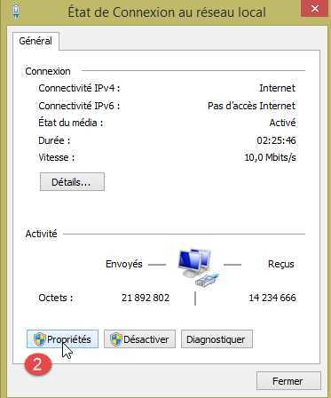
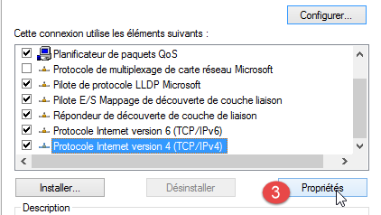
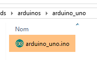
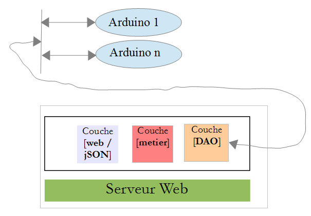
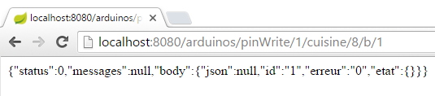
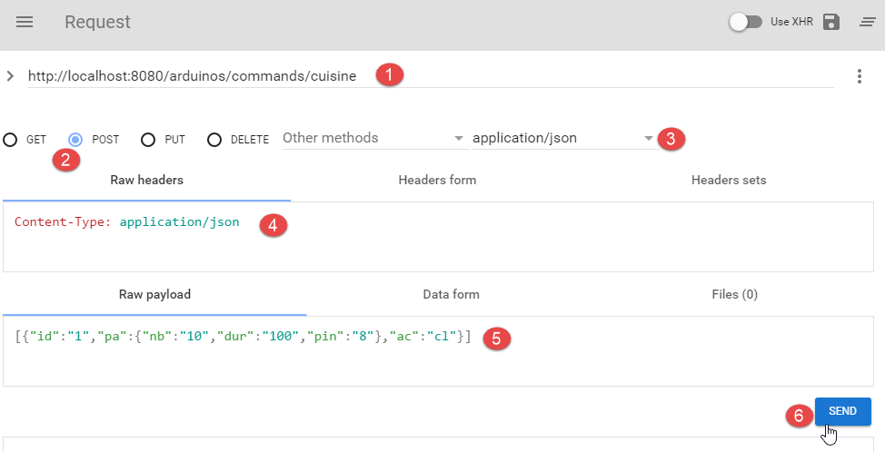
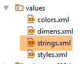
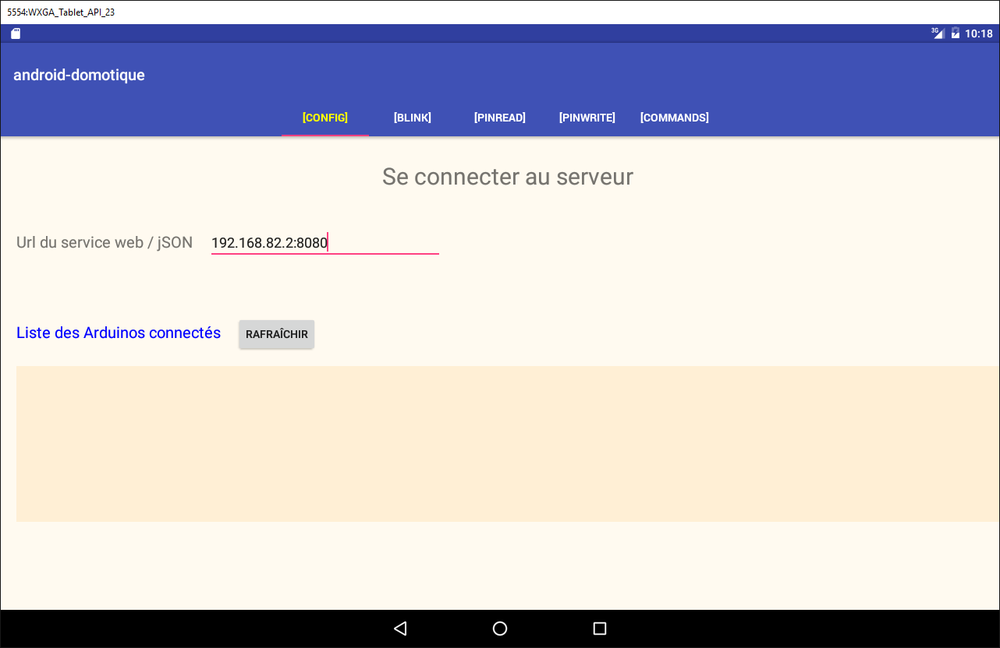

5. TP 2 – Arduinos mit einem Android-Tablet steuern
Wir werden nun lernen, wie man eine Arduino-Platine mit einem Tablet steuert. Als Beispiel dient das Projekt [client-android-skel] aus dem Kurs (siehe Abschnitt 2).
5.1. Projektarchitektur
Das gesamte Projekt wird folgende Architektur aufweisen:
 |
- Der Block [1] (Webserver) sowie jSON und die Arduinos werden Ihnen zur Verfügung gestellt;
- Sie müssen den Block [2] bauen und das Android-Tablet so programmieren, dass es mit dem Webserver / jSON kommuniziert.
5.2. Die Hardware
Ihnen stehen folgende Komponenten zur Verfügung:
- ein Arduino mit Ethernet-Erweiterung, einer LED und einem Temperatursensor;
- ein miniHub, das Sie sich mit einem anderen Studierenden teilen;
- ein Kabel USB zur Stromversorgung des Arduino;
- zwei Netzwerkkabel, um den Arduino und den PC in dasselbe private Netzwerk einzubinden;
- ein Android-Tablet;
5.2.1. Der Arduino
 |
So verbinden Sie die verschiedenen Komponenten miteinander:
- Entfernen Sie das Netzwerkkabel von Ihrem PC;
- verbinden Sie Ihr PC und den Arduino über ein Netzwerkkabel;
- Der Arduino, den Sie verwenden, ist bereits vorprogrammiert. Seine Adresse IP lautet [192.168.2.2]. Damit Ihr PC den Arduino erkennt, müssen Sie ihm im Netzwerk [192.168.2] die Adresse IP zuweisen. Die Arduinos wurden so programmiert, dass sie mit einem PC kommunizieren, der die Adresse IP [192.168.2.1] hat. So gehen Sie vor:
Gehen Sie zu [Panneau de configuration\Réseau et Internet\Centre Réseau et partage]:
 |
- auf [1], klicken Sie auf den Link [réseau local];
- Klicken Sie in [2] auf die Schaltfläche „[Propriétés]“ im lokalen Netzwerk;
 |  |
- Klicken Sie bei [3] auf die Eigenschaften [IPv4] der Karte [réseau local];
- Geben Sie dieser Karte unter [4] die Adresse IP [192.168.2.1] und die Subnetzmaske [255.255.255.0] ein;
- in [5]: Klicken Sie so oft wie nötig auf [OK], um den Assistenten zu verlassen.
5.2.2. Das Tablet
- Verbinden Sie Ihren Computer mithilfe Ihres WLAN-Schlüssels mit dem WLAN-Netzwerk, das Ihnen angegeben wird. Verfahren Sie ebenso mit Ihrem Tablet;
- Überprüfen Sie die WLAN-Adresse Ihres IP, indem Sie [ipconfig] in einem Fenster DOS eingeben. Sie werden eine Adresse im Format [192.168.x.y] finden;
dos>ipconfig
Configuration IP de Windows
Carte réseau sans fil Wi-Fi :
Suffixe DNS propre à la connexion. . . :
Adresse IPv6 de liaison locale. . . . .: fe80::39aa:47f6:7537:f8e1%2
Adresse IPv4. . . . . . . . . . . . . .: 192.168.1.25
Masque de sous-réseau. . . . . . . . . : 255.255.255.0
Passerelle par défaut. . . . . . . . . : 192.168.1.1
- Überprüfen Sie die WLAN-Adresse Ihres Tablets (IP). Fragen Sie Ihren Betreuer, wie das geht, falls Sie es nicht wissen. Sie werden eine Adresse finden, die etwa so aussieht: [192.168.x.z];
- deaktivieren Sie die Firewall Ihres PC, falls diese aktiv ist ([Panneau de configuration\Système et sécurité\Pare-feu Windows]);
- Überprüfen Sie in einem DOS-Fenster, ob das PC und das Tablet miteinander kommunizieren können, indem Sie den Befehl [ping 192.168.x.z] eingeben, wobei [192.168.x.z] die Adresse IP Ihres Tablets ist. Das Tablet sollte dann wie folgt antworten:
dos>ping 192.168.1.26
Envoi d'une requête 'Ping' 192.168.1.26 avec 32 octets de données :
Réponse de 192.168.1.26 : octets=32 temps=102 ms TTL=64
Réponse de 192.168.1.26 : octets=32 temps=134 ms TTL=64
Réponse de 192.168.1.26 : octets=32 temps=168 ms TTL=64
Réponse de 192.168.1.26 : octets=32 temps=208 ms TTL=64
Statistiques Ping pour 192.168.1.26:
Paquets : envoyés = 4, reçus = 4, perdus = 0 (perte 0%),
Durée approximative des boucles en millisecondes :
Minimum = 102ms, Maximum = 208ms, Moyenne = 153ms
Die Netzwerkkonfiguration Ihres Systems ist nun abgeschlossen.
5.2.3. Der Emulator [Genymotion]
Der Emulator [Genymotion] (siehe Abschnitt 6.9) ist eine vorteilhafte Alternative zum Tablet. Er ist fast genauso schnell und benötigt kein WLAN. Es wird empfohlen, diese Methode zu verwenden. Sie können das Tablet für die abschließende Überprüfung Ihrer Anwendung nutzen.
5.3. Programmierung der Arduinos
Hier befassen wir uns mit dem Schreiben des C-Codes für die Arduinos:
 |
Zu lesen
- Installation der Arduino-Entwicklungsumgebung (siehe Abschnitt 6.1);
- Verwendung von jSON-Bibliotheken (Anhänge, Abschnitt 6.6);
- Testen Sie in der Arduino-Entwicklungsumgebung das Beispiel für einen Server (z. B. den Webserver) und das Beispiel für einen Client (z. B. den Telnet-Client);
- die Anhänge zur Programmierumgebung der Arduinos in Abschnitt 6.1.
 |
Ein Arduino besteht aus einer Reihe von Pins, die mit der Hardware verbunden sind. Diese Pins sind Ein- oder Ausgänge. Ihr Wert ist binär oder analog. Zur Steuerung des Arduino gibt es zwei grundlegende Vorgänge:
- einen binären/analogen Wert auf einen durch seine Nummer bezeichneten Pin schreiben;
- einen binären/analogen Wert von einem durch seine Nummer bezeichneten Pin lesen;
Zu diesen beiden Grundoperationen fügen wir eine dritte hinzu:
- eine LED für eine bestimmte Dauer und mit einer bestimmten Frequenz blinken lassen. Diese Operation lässt sich durch wiederholtes Aufrufen der beiden vorangegangenen Grundoperationen realisieren. Bei den Tests werden wir jedoch feststellen, dass die Datenaustausche zwischen der Schicht [DAO] und einem Arduino im Sekundenbereich liegen. Es ist daher nicht möglich, eine LED beispielsweise alle 100 Millisekunden blinken zu lassen. Daher werden wir diese Blinkfunktion direkt auf dem Arduino selbst implementieren.
Die Funktionsweise des Arduino ist wie folgt:
- Die Kommunikation zwischen der Schicht [DAO] und einem Arduino erfolgt über ein TCP-IP-Netzwerk durch den Austausch von Textzeilen im Format jSON (JavaScript Object Notation);
- Beim Start verbindet sich der Arduino mit Port 100 eines Registrierungsservers, der sich in der Schicht [DAO] befindet. Er sendet dem Server eine einzige Textzeile:
Dies ist eine jSON-Zeichenkette, die den sich verbindenden Arduino charakterisiert:
- id: eine Kennung des Arduino;
- desc: eine Beschreibung der Funktionen des Arduinos. Hier wurde lediglich der Typ des Arduinos angegeben;
- mac: die MAC-Adresse des Arduino;
- port: Die Nummer des Ports, an dem der Arduino auf Befehle von der [DAO]-Schicht wartet.
Alle diese Informationen sind Zeichenfolgen, mit Ausnahme des Ports, der eine Ganzzahl ist.
- Sobald sich der Arduino beim Registrierungsserver angemeldet hat, lauscht er auf dem Port, den er dem Server mitgeteilt hat (oben 102). Er wartet auf jSON-Befehle in folgender Form:
Dies ist eine Zeichenkette jSON mit folgenden Elementen:
- id: eine Kennung des Befehls. Kann beliebig sein;
- ac: eine Aktion. Es gibt drei davon:
- pw (Pin Write) zum Schreiben eines Werts an einen Pin,
- pr (Pin Read) zum Auslesen des Werts eines Pins,
- cl (blinken) zum Blinken einer LED;
- pa: die Parameter der Aktion. Sie hängen von der jeweiligen Aktion ab.
- Der Arduino sendet systematisch eine Antwort an seinen Client zurück. Diese ist eine Zeichenkette jSON in folgender Form:
wobei
- id: die Kennung des Befehls, auf den geantwortet wird;
- er (Fehler): ein Fehlercode, falls ein Fehler aufgetreten ist, andernfalls 0;
- und (Status): ein Wörterbuch, das immer leer ist, außer beim Lesebefehl pr. Das Wörterbuch enthält dann den Wert des angeforderten Pins Nr. x.
Hier sind einige Beispiele zur Verdeutlichung der vorstehenden Spezifikationen:
Die LED Nr. 8 soll 10 Mal mit einer Periode von 100 Millisekunden blinken:
Befehl | |
Antwort |
Die Parameter des Befehls „cl“ sind: die Dauer „dur“ in Millisekunden eines Blinks, die Anzahl „nb“ der Blinks und die Pin-Nr. der LED.
Schreiben Sie den Binärwert 1 auf Pin Nr. 7:
Befehl | |
Antwort |
Die Parameter „pa“ des Befehls „pw“ sind: der Modus „b“ (binär) oder „a“ (analog) für das Schreiben, der zu schreibende Wert „val“ und die Pin-Nr. des Pins. Bei einem binären Schreibvorgang ist val entweder 0 oder 1. Bei einem analogen Schreibvorgang liegt val im Bereich [0,255].
Schreiben Sie den analogen Wert 120 auf Pin Nr. 2:
Befehl | |
Antwort |
Den Analogwert von Pin 0 lesen:
Befehl | |
Antwort |
Die Parameter „pa“ des Befehls „pr“ sind: der Modus „b“ (binär) oder „a“ (analog) für das Auslesen sowie die Pin-Nummer des Pins. Wenn kein Fehler vorliegt, fügt der Arduino den Wert des angeforderten Pins in das „et“-Wörterbuch seiner Antwort ein. Hier gibt „pin0“ an, dass der Wert von Pin Nr. 0 abgefragt wurde, und „1023“ ist dieser Wert. Beim Auslesen liegt ein analoger Wert im Bereich [0, 1024].
Wir haben die drei Befehle „cl“, „pw“ und „pr“ vorgestellt. Man könnte sich fragen, warum in den Zeichenketten jSON keine aussagekräftigeren Felder verwendet wurden, wie beispielsweise „action“ anstelle von „ac“, „pinwrite“ anstelle von „pw“, „parameters“ anstelle von „pa“ usw. Ein Arduino verfügt über sehr wenig Speicherplatz. Da die mit dem Arduino ausgetauschten Zeichenfolgen jSON jedoch Speicherplatz beanspruchen, haben wir uns entschieden, diese so weit wie möglich zu verkürzen.
Sehen wir uns nun einige Fehlerfälle an:
Befehl | |
Antwort |
Es wurde ein Befehl gesendet, der nicht dem Format jSON entspricht. Der Arduino hat den Fehlercode 100 zurückgegeben.
Befehl | |
Antwort |
Es wurde ein Befehl gesendet, bei dem der Parameter „pin“ vergessen wurde. Der Arduino hat den Fehlercode 302 zurückgegeben.
Befehl | |
Antwort |
Es wurde ein unbekannter „pinread“-Befehl gesendet (es handelt sich um „pr“). Der Arduino hat den Fehlercode 104 zurückgegeben.
Wir werden die Beispiele nicht fortsetzen. Die Regel ist einfach: Der Arduino darf nicht abstürzen, egal welchen Befehl man ihm sendet. Bevor er einen Befehl jSON ausführt, stellt er sicher, dass dieser korrekt ist. Sobald ein Fehler auftritt, bricht der Arduino die Ausführung des Befehls ab und sendet seinem Client die Fehlerzeichenfolge jSON zurück. Auch hier wird aufgrund des begrenzten Speicherplatzes ein Fehlercode anstelle einer vollständigen Fehlermeldung zurückgegeben.
Der Code des auf dem Arduino ausgeführten Programms wird Ihnen in den Beispielen dieses Dokuments zur Verfügung gestellt:
 |
Um ihn auf den Arduino zu übertragen:
- Schließen Sie diesen an Ihren PC an;
 |  |
- auf dem [1] die Datei [arduino_uno.ino] öffnen. Der Arduino IDE startet und lädt die Datei;
Hinweis: Der Code wurde ursprünglich mit einer Version 1.5.x von IDE ARDUINO erstellt und getestet. Seitdem sind weitere Versionen des IDE erschienen. Der Code funktionierte nicht mit einer Version 1.6.x von IDE ARDUINO. Es scheint ein Abwärtskompatibilitätsproblem zwischen den Versionen 1.6 und 1.5 zu geben.
- Geben Sie bei [2-4] den verwendeten Arduino-Typ an;
 |  |
- Geben Sie in [5-7] an, an welchem seriellen Port des PC es angeschlossen ist;
- Laden Sie bei [8] das Programm [arduino_uno] auf den Arduino hoch (= laden);
Der Programmcode ist ausführlich kommentiert. Interessierte Leser können dort nachschlagen. Wir weisen lediglich auf die Codezeilen hin, mit denen die bidirektionale Client-Server-Kommunikation zwischen dem Arduino und dem PC konfiguriert wird:
#include <SPI.h>
#include <Ethernet.h>
#include <ajSON.h>
// ---------------------------------- CONFIGURATION DE L'ARDUINO UNO
// Adresse MAC des Arduino UNO
byte macArduino[] = {
0x90, 0xA2, 0xDA, 0x0D, 0xEE, 0xC7 };
char * strMacArduino="90:A2:DA:0D:EE:C7";
// die Adresse des Arduino IP
IPAddress ipArduino(192,168,2,2);
// seine Kennung
char * idArduino="cuisine";
// Port des Arduino-Servers
int portArduino=102;
// Beschreibung des Arduino
char * descriptionArduino="contrôle domotique";
// Der Arduino-Server läuft auf Port 102
EthernetServer server(portArduino);
// IP des Registrierungsservers
IPAddress ipServeurEnregistrement(192,168,2,1);
// Port des Registrierungsservers
int portServeurEnregistrement=100;
// Arduino-Client des Registrierungsservers
EthernetClient clientArduino;
// Befehl des Clients
char commande[100];
// die Antwort des Arduino
char message[100];
// Initialisierung
void setup() {
// Mit dem seriellen Monitor lässt sich der Datenaustausch verfolgen
Serial.begin(9600);
// Aufbau der Ethernet-Verbindung
Ethernet.begin(macArduino,ipArduino);
// Verfügbarer Speicher
Serial.print(F("Memoire disponible : "));
Serial.println(freeRam());
}
// Endlosschleife
void loop()
{
...
}
- Zeile 8: Die MAC-Adresse des Arduino. Sie spielt hier keine große Rolle, da sich der Arduino in einem privaten Netzwerk befindet, in dem sich ein PC und ein oder mehrere Arduinos befinden. Die MAC-Adresse muss in diesem privaten Netzwerk lediglich eindeutig sein. Normalerweise befindet sich auf der Netzwerkkarte des Arduino ein Aufkleber, auf dem die MAC-Adresse der Karte angegeben ist. Falls dieser Aufkleber fehlt und Sie die MAC-Adresse der Karte nicht kennen, können Sie in Zeile 8 einen beliebigen Wert eingeben, solange die Regel der Eindeutigkeit der MAC-Adresse im privaten Netzwerk eingehalten wird;
- Zeile 11: Die Adresse IP der Netzwerkkarte. Auch hier kann man einen beliebigen Wert vom Typ [192.168.2.x] eingeben und x für die verschiedenen Arduinos im privaten Netzwerk variieren;
- Zeile 13: Kennung des Arduinos. Muss unter den Kennungen der Arduinos desselben privaten Netzwerks eindeutig sein;
- Zeile 15: Der Dienstport des Arduinos. Hier kann ein beliebiger Wert eingegeben werden;
- Zeile 17: Die Beschreibung der Funktion des Arduinos. Hier kann man einen beliebigen Wert eingeben. Bei langen Zeichenfolgen ist aufgrund des begrenzten Speichers des Arduinos Vorsicht geboten;
- Zeile 21: Adresse IP des Registrierungsservers des Arduino auf dem PC. Darf nicht geändert werden;
- Zeile 23: Port dieses Protokollierungsdienstes. Darf nicht geändert werden;
5.4. Der Webserver / jSON
5.4.1. Installation

Die Java-Binärdatei des Webservers / jSON wird Ihnen bereitgestellt:
 |
Öffnen Sie ein Befehlsfenster und geben Sie den folgenden Befehl ein:
Falls [java.exe] nicht im Verzeichnis PATH des Befehlsfensors enthalten ist, müssen Sie den vollständigen Pfad zu [java.exe] eingeben (in der Regel C:\Program Files\java\...).
Es öffnet sich ein Fenster „DOS“, in dem Protokolle angezeigt werden:
. ____ _ __ _ _
/\\ / ___'_ __ _ _(_)_ __ __ _ \ \ \ \
( ( )\___ | '_ | '_| | '_ \/ _` | \ \ \ \
\\/ ___)| |_)| | | | | || (_| | ) ) ) )
' |____| .__|_| |_|_| |_\__, | / / / /
=========|_|==============|___/=/_/_/_/
:: Spring Boot :: (v0.5.0.M6)
2014-01-06 11:11:35.550 INFO 8408 --- [ main] arduino.rest.metier.Application : Starting Application on Gportpers3 with PID 8408 (C:\Users\SergeTahÚ\Desktop\part2\server.jar started by ST)
2014-01-06 11:11:35.587 INFO 8408 --- [ main] ationConfigEmbeddedWebApplicationContext : Refreshing org.springframework.boot.context.embedded.AnnotationConfigEmbeddedWebApplicationContext@6a4ba620: startup date [Mon Jan 06 11:11:35 CET 2014]; root of context hierarchy
2014-01-06 11:11:36.765 INFO 8408 --- [ main] o.apache.catalina.core.StandardService : Starting service Tomcat
2014-01-06 11:11:36.766 INFO 8408 --- [ main] org.apache.catalina.core.StandardEngine : Starting Servlet Engine: Apache Tomcat/7.0.42
2014-01-06 11:11:36.876 INFO 8408 --- [ost-startStop-1] o.a.c.c.C.[Tomcat].[localhost].[/] : Initializing Spring embedded WebApplicationContext
2014-01-06 11:11:36.877 INFO 8408 --- [ost-startStop-1] o.s.web.context.ContextLoader : Root WebApplicationContext: initialization completed in 1293 ms
2014-01-06 11:11:37.084 INFO 8408 --- [ost-startStop-1] o.a.c.c.C.[Tomcat].[localhost].[/] : Initializing Spring FrameworkServlet 'dispatcherServlet'
2014-01-06 11:11:37.084 INFO 8408 --- [ost-startStop-1] o.s.web.servlet.DispatcherServlet : FrameworkServlet 'dispatcherServlet': initialization started
2014-01-06 11:11:37.184 INFO 8408 --- [ost-startStop-1] o.s.w.s.handler.SimpleUrlHandlerMapping : Mapped URL path [/**/favicon.ico] onto handler of type [class org.springframework.web.servlet.resource.ResourceHttpRequestHandler]
2014-01-06 11:11:37.386 INFO 8408 --- [ost-startStop-1] s.w.s.m.m.a.RequestMappingHandlerMapping : Mapped "{[/arduinos/blink/{idCommande}/{idArduino}/{pin}/{duree}/{nombre}],methods=[GET],params=[],headers=[],consumes=[],produces=[],custom=[]}" onto public java.lang.String arduino.rest.metier.RestMetier.faireClignoterLed(java.lang.String,java.lang.String,java.lang.String,java.lang.String,java.lang.String,javax.servlet.http.HttpServletResponse)
2014-01-06 11:11:37.388 INFO 8408 --- [ost-startStop-1] s.w.s.m.m.a.RequestMappingHandlerMapping : Mapped "{[/arduinos/commands/{idArduino}],methods=[POST],params=[],headers=[],consumes=[],produces=[],custom=[]}" onto public java.lang.String arduino.rest.metier.RestMetier.sendCommandesJson(java.lang.String,java.lang.String,javax.servlet.http.HttpServletResponse)
2014-01-06 11:11:37.388 INFO 8408 --- [ost-startStop-1] s.w.s.m.m.a.RequestMappingHandlerMapping : Mapped "{[/arduinos/],methods=[GET],params=[],headers=[],consumes=[],produces=[],custom=[]}" onto public java.lang.String arduino.rest.metier.RestMetier.getArduinos(javax.servlet.http.HttpServletResponse)
2014-01-06 11:11:37.389 INFO 8408 --- [ost-startStop-1] s.w.s.m.m.a.RequestMappingHandlerMapping : Mapped "{[/arduinos/pinRead/{idCommande}/{idArduino}/{pin}/{mode}],methods=[GET],params=[],headers=[],consumes=[],produces=[],custom=[]}" onto public java.lang.String arduino.rest.metier.RestMetier.pinRead(java.lang.String,java.lang.String,java.lang.String,java.lang.String,javax.servlet.http.HttpServletResponse)
2014-01-06 11:11:37.390 INFO 8408 --- [ost-startStop-1] s.w.s.m.m.a.RequestMappingHandlerMapping : Mapped "{[/arduinos/pinWrite/{idCommande}/{idArduino}/{pin}/{mode}/{valeur}],methods=[GET],params=[],headers=[],consumes=[],produces=[],custom=[]}" onto public java.lang.String arduino.rest.metier.RestMetier.pinWrite(java.lang.String,java.lang.String,java.lang.String,java.lang.String,java.lang.String,javax.servlet.http.HttpServletResponse)
2014-01-06 11:11:37.463 INFO 8408 --- [ost-startStop-1] o.s.w.s.handler.SimpleUrlHandlerMapping : Mapped URL path [/**] auf den Handler vom Typ [class org.springframework.web.servlet.resource.ResourceHttpRequestHandler]
2014-01-06 11:11:37.464 INFO 8408 --- [ost-startStop-1] o.s.w.s.handler.SimpleUrlHandlerMapping : Mapped URL path [/webjars/**] Ont-Handler vom Typ [class org.springframework.web.servlet.resource.ResourceHttpRequestHandler]
2014-01-06 11:11:37.881 INFO 8408 --- [ost-startStop-1] o.s.web.servlet.DispatcherServlet : FrameworkServlet 'dispatcherServlet': initialization completed in 796 ms
Serveur d'enregistrement lancÚ sur 192.168.2.1:100
2014-01-06 11:11:38.101 INFO 8408 --- [ Thread-4] arduino.dao.Recorder : Recorder : [11:11:38:101] : [Serveur d'enregistrement : attente d'un client]
2014-01-06 11:11:38.142 INFO 8408 --- [ main] arduino.rest.metier.Application : Started Application in 3.257 seconds
- Zeile 11: Ein eingebetteter Tomcat-Server wird gestartet;
- Zeile 15: Das Spring-Servlet [dispatcherServlet] von MVC wird geladen und ausgeführt;
- Zeile 18: Das Rest-Servlet URL ([/arduinos/blink/{idCommande}/{idArduino}/{pin}/{duree}/{nombre}]) wird erkannt;
- Zeile 19: Das Rest-Servlet URL ([/arduinos/commands/{idArduino}]) wird erkannt;
- Zeile 20: URL Rest [/arduinos/] wird erkannt;
- Zeile 21: URL Rest [/arduinos/pinRead/{idCommande}/{idArduino}/{pin}/{mode}] wird erkannt;
- Zeile 22: URL Rest [/arduinos/pinWrite/{idCommande}/{idArduino}/{pin}/{mode}/{valeur}] wird erkannt;
- Zeile 26: Der Arduino-Protokollserver wird gestartet;
Schließen Sie Ihren Arduino an den PC an, falls dies noch nicht geschehen ist. Die Firewall des PC muss deaktiviert sein. Rufen Sie anschließend mit einem Browser den URL [http://localhost:8080/arduinos] auf:
 |
Die ID des angeschlossenen Arduino sollte nun angezeigt werden. Falls nichts angezeigt wird, setzen Sie den Arduino zurück. Dazu gibt es einen Druckknopf.
Der Webserver / jSON ist nun installiert.
5.4.2. Die vom Webdienst / jSON bereitgestellten URL
Lesetipp: Projekt [Exemple-15] (siehe Abschnitt 1.16.1);
Der Webdienst / jSON wurde mit Spring MVC implementiert und stellt die folgenden URL bereit:
@Controller
public class WebController {
// Geschäftsschicht
@Autowired
private IMetier métier;
// Liste der Arduinos
@RequestMapping(value = "/arduinos", method = RequestMethod.GET, produces = MediaType.APPLICATION_JSON_VALUE)
@ResponseBody
public String getArduinos() throws JsonProcessingException {
...
}
// Blinken
@RequestMapping(value = "/arduinos/blink/{idCommande}/{idArduino}/{pin}/{duree}/{nombre}", method = RequestMethod.GET, produces = MediaType.APPLICATION_JSON_VALUE)
@ResponseBody
public String faireClignoterLed(@PathVariable("idCommande") String idCommande, @PathVariable("idArduino") String idArduino, @PathVariable("pin") int pin, @PathVariable("duree") int duree, @PathVariable("nombre") int nombre) throws JsonProcessingException {
...
}
// Befehle senden JSON
@RequestMapping(value = "/arduinos/commands/{idArduino}", method = RequestMethod.POST, produces = MediaType.APPLICATION_JSON_VALUE, consumes = MediaType.APPLICATION_JSON_VALUE)
@ResponseBody
public String sendCommandesJson(@PathVariable("idArduino") String idArduino, HttpServletRequest request) throws IOException {
...
}
// Pin auslesen
@RequestMapping(value = "/arduinos/pinRead/{idCommande}/{idArduino}/{pin}/{mode}", method = RequestMethod.GET, produces = MediaType.APPLICATION_JSON_VALUE)
@ResponseBody
public String pinRead(@PathVariable("idCommande") String idCommande, @PathVariable("idArduino") String idArduino, @PathVariable("pin") int pin, @PathVariable("mode") String mode) throws JsonProcessingException {
....
}
// Pin-Schreiben
@RequestMapping(value = "/arduinos/pinWrite/{idCommande}/{idArduino}/{pin}/{mode}/{valeur}", method = RequestMethod.GET, produces = MediaType.APPLICATION_JSON_VALUE)
@ResponseBody
public String pinWrite(@PathVariable("idCommande") String idCommande, @PathVariable("idArduino") String idArduino, @PathVariable("pin") int pin, @PathVariable("mode") String mode, @PathVariable("valeur") int valeur) throws JsonProcessingException {
...
}
}
Die vom Server gesendeten Antworten sind jSON-Darstellungen der folgenden Klasse [Response<T>]:
package client.android.dao.service;
import java.util.List;
public class Response<T> {
// ----------------- Eigenschaften
// Status des Vorgangs
private int status;
// allfällige Statusmeldungen
private List<String> messages;
// Antworttext
private T body;
// Konstruktoren
public Response() {
}
public Response(int status, List<String> messages, T body) {
this.status = status;
this.messages = messages;
this.body = body;
}
// Getter und Setter
...
}
Der URL [/arduinos] sendet eine Antwort vom Typ [Response<List<Arduino>>], wobei [Arduino] die folgende Klasse ist:
package android.arduinos.entities;
import java.io.Serializable;
public class Arduino implements Serializable {
// Daten
private String id;
private String description;
private String mac;
private String ip;
private int port;
// Getter und Setter
...
}
- Zeile 7: [id] ist die Kennung des Arduino;
- Zeile 8: seine Beschreibung;
- Zeile 9: seine Adresse MAC;
- Zeile 10: seine Adresse IP;
- Zeile 11: der Port, auf dem er auf Befehle wartet;
Die URL:
- [/arduinos/blink/{idCommande}/{idArduino}/{pin}/{duree}/{nombre}];
- [/arduinos/pinRead/{idCommande}/{idArduino}/{pin}/{mode}];
- [/arduinos/pinWrite/{idCommande}/{idArduino}/{pin}/{mode}/{valeur}];
- [/arduinos/commands/{idArduino}];
senden eine Antwort vom Typ [Response<ArduinoResponse>], wobei die Klasse [ArduinoResponse] die Standardantwort eines Arduino darstellt:
public class ArduinoResponse implements Serializable {
private String json;
private String id;
private String erreur;
private Map<String, Object> etat;
// Getter und Setter
...
}
- [json]: die von einem Arduino gesendete Zeichenfolge jSON, die nicht dekodiert werden konnte (Fehlerfall), andernfalls null;
- [id]: die Kennung des Befehls, auf den der Arduino antwortet;
- [erreur]: ein Fehlercode, 0, wenn OK, andernfalls ein anderer Wert;
- [etat]: Ein Dictionary, das die befehlsspezifische Antwort enthält. Es ist meist leer, es sei denn, der Befehl forderte das Auslesen eines Werts vom Arduino an; in diesem Fall wird dieser Wert in dieses Dictionary eingefügt;
5.4.3. Tests des Webdienstes / jSON
Machen Sie sich mit dem Webserver / jSON vertraut, indem Sie die folgenden URL testen:
Hier sind einige Screenshots davon, wie das Ergebnis aussehen sollte:
Liste der verbundenen Arduinos abrufen:
 |
Die vom Webserver empfangene Zeichenfolge jSON / jSON ist ein Objekt mit den folgenden Feldern:
- [status]: Der Wert 0 bedeutet, dass kein Fehler aufgetreten ist – andernfalls ist ein Fehler aufgetreten;
- [messages]: eine Liste von Meldungen, die den Fehler erklären, falls ein Fehler aufgetreten ist:
- [body]: die Liste der Arduinos, falls kein Fehler aufgetreten ist. Jeder Arduino wird dann durch ein Objekt mit den folgenden Feldern beschrieben:
- [id]: ID des Arduinos. Zwei Arduinos können nicht dieselbe ID haben;
- [description]: Kurzbeschreibung der Funktion des Arduinos;
- [mac]: MAC-Adresse des Arduinos;
- [ip]: Adresse des Arduinos;
- [port]: Port, auf dem er auf Befehle wartet;
Die LED am Pin Nr. 8 des durch [cuisine] identifizierten Arduino soll 20 Mal alle 100 ms blinken:
 |
Die vom Webserver empfangene Zeichenfolge jSON / jSON ist ein Objekt mit den folgenden Feldern:
- [status]: Der Wert 0 bedeutet, dass kein Fehler aufgetreten ist – andernfalls ist ein Fehler aufgetreten;
- [messages]: Eine Liste von Meldungen, die den Fehler erklären, falls ein Fehler aufgetreten ist:
- [body]: Die Antwort des Arduino, falls kein Fehler aufgetreten ist:
- [id]: Befehls-ID. Diese ID ist die 1 in [/blink/1]. Der Arduino übernimmt diese Befehls-ID in seine Antwort;
- [erreur]: eine Fehlernummer. Ein Wert ungleich 0 signalisiert einen Fehler;
- [etat]: Wird nur beim Auslesen eines Pins verwendet. Hat dann als Wert den Wert des Pins;
- [json]: Wird nur im Falle eines Fehlers jSON zwischen Client und Server verwendet. Hat dann als Wert die fehlerhafte Zeichenkette jSON, die vom Arduino gesendet wurde;
Analoge Abtastung von Pin Nr. 0 des Arduinos, identifiziert durch [cuisine]:
 |
Die vom Webserver empfangene Zeichenfolge jSON / jSON entspricht der vorherigen, mit dem Unterschied, dass das Feld [etat] den Wert von Pin Nr. 0 darstellt.
Binäre Auslesung von Pin Nr. 5 des Arduino, identifiziert durch [cuisine]:
 |
Die vom Webserver empfangene Zeichenfolge jSON / jSON entspricht der vorherigen.
Binäres Schreiben des Werts 1 auf Pin Nr. 8 des Arduino mit der Kennung [cuisine]:
 |
Die vom Webserver empfangene Zeichenfolge jSON / jSON ist analog zur vorherigen.
Der Test von URL und [http://localhost:8080/arduinos/commands/cuisine] ist etwas kniffliger. Die Methode des Webservers / jSON, die diese URL verarbeitet, erwartet eine Anfrage POST, die sich nicht einfach mit einem Browser simulieren lässt. Um diese URL zu testen, kann man einen Chrome-Browser mit der Erweiterung [Advanced REST Client] verwenden (siehe Abschnitt 6.13):
 |
- in [1], das URL der zu testenden Webmethode / jSON;
- in [2] die Methode POST zum Senden der Anfrage;
- in [3-4] ist der übermittelte Wert der von jSON;
- in [5] ist die übermittelte Zeichenfolge jSON. Beachten Sie bitte die eckigen Klammern, die die Liste einleiten und abschließen. Hier gibt es in der Liste nur einen Befehl jSON, der Pin Nr. 8 alle 100 ms zehnmal blinken lässt;
- in [6] wird die Anfrage gesendet;
 |
- mit [7] wird die vom Server gesendete Antwort jSON übermittelt. Das Objekt hat ein Objekt mit den beiden üblichen Feldern [status, messages] und einem Feld [body] empfangen, dessen Wert die Liste der Antworten des Arduino auf jeden der gesendeten Befehle jSON ist.
Schauen wir uns an, was passiert, wenn ein für den Arduino syntaktisch falscher Befehl jSON gesendet wird:
 |
Man erhält dann folgende Antwort:
 |
Man sieht, dass in der Antwort des Arduino die Fehlernummer [104] lautet, was darauf hinweist, dass der Befehl [xx] nicht erkannt wurde.
5.5. Tests des Android-Clients
 |
Die fertige ausführbare Datei des Android-Clients lautet:
|
Ziehen Sie die oben angegebene Binärdatei [app-debug.apk] mit der Maus auf einen Tablet-Emulator [GenyMotion]. Sie wird dann gespeichert und anschließend ausgeführt. Starten Sie außerdem den Webserver / jSON, falls dies noch nicht geschehen ist. Schließen Sie den Arduino mit einer LED daran an den PC an. Der Android-Client ermöglicht die Fernsteuerung der Arduinos. Er zeigt dem Benutzer die folgenden Bildschirme an.
Über die Registerkarte „[CONFIG]“ kann eine Verbindung zum Server hergestellt und die Liste der verbundenen Arduinos abgerufen werden:

- Geben Sie in [1] die Adresse IP [192.168.2.1] ein, die Ihrem PC zugewiesen wurde (siehe Abschnitt 5.2).
Über die Registerkarte [PINWRITE] können Sie einen Wert an einen Pin eines Arduino schreiben:


Über die Registerkarte „[PINREAD]“ können Sie den Wert eines Pins eines Arduino auslesen:

Über die Registerkarte [BLINK] kann eine LED eines Arduino zum Blinken gebracht werden:

Über die Registerkarte „[COMMAND]“ kann ein Befehl „jSON“ an einen Arduino gesendet werden:

5.6. Der Android-Client des Webdienstes / jSON
Wir wenden uns nun der Entwicklung des Android-Clients zu.
5.6.1. Die Architektur des Clients
Die Architektur des Android-Clients entspricht der des Projekts [Exemple-15] (siehe Abschnitt 1.16.2);
 |
- Die Schicht [DAO] kommuniziert mit dem Webserver / jSON;
Der Android-Client muss in der Lage sein, mehrere Arduinos gleichzeitig zu steuern. Beispielsweise soll es möglich sein, zwei LEDs auf zwei Arduinos gleichzeitig blinken zu lassen und nicht nacheinander. Daher wird unser Android-Client pro Arduino eine asynchrone Aufgabe verwenden, und diese Aufgaben werden parallel ausgeführt.
5.6.2. Das Android Studio-Projekt des Clients
Duplizieren Sie das Projekt [client-android-skel] (siehe Abschnitt 2) in das Projekt [client-arduinos-01] (lesen Sie gegebenenfalls noch einmal nach, wie man ein Gradle-Projekt dupliziert, siehe Abschnitt 1.15):

5.6.3. Die fünf Ansichten XML
 |
Es wird fünf Ansichten XML geben:
- [blink]: um eine LED eines Arduino blinken zu lassen. Sie ist mit dem Fragment [BlinkFragment] verknüpft;
- [commands]: zum Senden eines Befehls jSON an einen Arduino. Sie ist mit dem Fragment [CommandsFragment] verknüpft;
- [config]: zum Konfigurieren des Webdienstes URL / jSON und zum Abrufen der anfänglichen Liste der verbundenen Arduinos. Es ist mit dem Fragment [ConfigFragment] verknüpft;
- [pinread]: zum Auslesen des binären oder analogen Werts eines Pins eines Arduinos. Es ist mit dem Fragment [PinReadFragment] verknüpft;
- [pinwrite]: zum Schreiben eines binären oder analogen Werts auf einen Pin eines Arduinos. Es ist mit dem Fragment [PinWriteFragment] verknüpft;
Derzeit haben diese fünf Ansichten XML alle denselben leeren Inhalt:
<?xml version="1.0" encoding="utf-8"?>
<ScrollView xmlns:android="http://schemas.android.com/apk/res/android"
android:id="@+id/scrollView1"
android:layout_width="wrap_content"
android:layout_height="wrap_content">
<RelativeLayout xmlns:android="http://schemas.android.com/apk/res/android"
android:layout_width="match_parent"
android:layout_height="match_parent">
</RelativeLayout>
</ScrollView>
- Die Ansicht befindet sich in einem Container [RelativeLayout] (Zeilen 7–10), der wiederum in einem Container [ScrollView] (Zeilen 2–11) enthalten ist. Dadurch wird sichergestellt, dass wir in der Ansicht „scrollen“ können, falls diese die Größe eines Tablet-Bildschirms überschreitet;
Aufgabe: Erstellen Sie die fünf Ansichten XML.
5.6.4. Das Fragment-Menü
Wir wissen, dass die Fragmente eines mit [client-android-skel] erstellten Projekts einem Menü zugeordnet werden müssen, auch wenn dieses leer ist. In diesem Fall wird die Anwendung kein Menü haben. Das leere Menü ist bereits im Projekt vorhanden;
 |
5.6.5. Die fünf Fragmente der Anwendung
 |  |
Aufgabe: Duplizieren Sie das Fragment [DummyFragment] in den fünf Fragmenten der Anwendung, wie in [2] gezeigt.
Das Fragment [ConfigFragment] hat das folgende Grundgerüst:
package client.android.fragments.behavior;
import client.android.R;
import client.android.architecture.core.AbstractFragment;
import client.android.architecture.custom.CoreState;
import client.android.fragments.state.DummyFragmentState;
import org.androidannotations.annotations.EFragment;
import org.androidannotations.annotations.OptionsMenu;
@EFragment
@OptionsMenu(R.menu.menu_vide)
public class ConfigFragment extends AbstractFragment {
// Von der übergeordneten Klasse geerbte Felder -------------------------------------------------------
...
Ersetzen Sie Zeile 10 durch die folgende Zeile:
@EFragment(R.layout.config)
Aufgabe: Gehen Sie bei den vier anderen Fragmenten ebenso vor und passen Sie dabei das Attribut [@EFragment] der Klasse entsprechend an.
Fragment | Ansicht |
ConfigFragment | |
PinReadFragment | |
PinWriteFragment | |
CommandsFragment | |
BlinkFragment | |
5.6.6. Der Status der Fragmente
 |  |
Jedes Fragment erhält einen Status.
Aufgabe: Duplizieren Sie die Klasse [DummyFragmentState] fünfmal, um die fünf in [2] dargestellten Status zu erstellen.
5.6.7. Anpassung des Projekts
 |
Das Paket [architecture / custom] enthält die anpassbaren Elemente der Anwendungsarchitektur.
5.6.7.1. Die Schnittstelle [IMainActivity]
Die Schnittstelle [IMainActivity] definiert, welche Anforderungen die Fragmente an die Aktivität stellen können, sowie die Konstanten der Anwendung. Diese Schnittstelle sieht hier wie folgt aus:
package client.android.architecture.custom;
import client.android.architecture.core.ISession;
import client.android.dao.service.IDao;
public interface IMainActivity extends IDao {
// Zugriff auf die Sitzung
ISession getSession();
// Wechsel der Ansicht
void navigateToView(int position, ISession.Action action);
// Wartungsverwaltung
void beginWaiting();
void cancelWaiting();
// Anwendungskonstanten -------------------------------------
// Debug-Modus
boolean IS_DEBUG_ENABLED = true;
// maximale Wartezeit auf die Antwort des Servers
int TIMEOUT = 1000;
// Wartezeit vor der Ausführung der Client-Anfrage
int DELAY = 000;
// Basis-Authentifizierung
boolean IS_BASIC_AUTHENTIFICATION_NEEDED = false;
// Aneinandergrenzung der Fragmente
int OFF_SCREEN_PAGE_LIMIT = 1;
// Registerkartenleiste
boolean ARE_TABS_NEEDED = true;
// Ladebild
boolean IS_WAITING_ICON_NEEDED = true;
// Anzahl der Fragmente
int FRAGMENTS_COUNT = 5;
// Anzahl der Aufrufe
int VUE_CONFIG = 0;
int VUE_BLINK = 1;
int VUE_PINREAD = 2;
int VUE_PINWRITE = 3;
int VUE_COMMANDS = 4;
}
- Zeilen 25, 28, 31, 40: Konfiguration der Schicht [DAO]. Diese Anwendung fragt einen Webserver ab / jSON;
- Zeile 37: Diese Anwendung verfügt über Registerkarten;
- Zeile 43: Diese Anwendung verfügt über fünf Fragmente;
- Zeilen 46–50: Die Nummern der fünf Fragmente;
- Zeile 34: Nachbarschaft der Fragmente. Der Entwickler kann hier einen Wert im Bereich [1, FRAGMENTS_COUNT-1] eingeben;
5.6.7.2. Die Klasse [CoreState]
Die Klasse [CoreState] ist die übergeordnete Klasse der Fragmentzustände:
package client.android.architecture.custom;
import client.android.architecture.core.MenuItemState;
import client.android.fragments.state.*;
import com.fasterxml.jackson.annotation.JsonIgnoreProperties;
import com.fasterxml.jackson.annotation.JsonSubTypes;
import com.fasterxml.jackson.annotation.JsonTypeInfo;
@JsonIgnoreProperties(ignoreUnknown = true)
@JsonTypeInfo(use = JsonTypeInfo.Id.NAME, include = JsonTypeInfo.As.PROPERTY)
@JsonSubTypes({
@JsonSubTypes.Type(value = ConfigFragmentState.class),
@JsonSubTypes.Type(value = BlinkFragmentState.class),
@JsonSubTypes.Type(value = PinReadFragmentState.class),
@JsonSubTypes.Type(value = PinWriteFragmentState.class),
@JsonSubTypes.Type(value = CommandsFragmentState.class)}
)
public class CoreState {
// Fragment besucht oder nicht
protected boolean hasBeenVisited = false;
// Status des eventuellen Menüs des Fragments
protected MenuItemState[] menuOptionsState;
// Getter und Setter
...
}
- Zeilen 12–16: Hier müssen die Klassen der Zustände der fünf Fragmente deklariert werden;
5.6.8. Die Klasse [MainActivity]
 |
Die Klasse [MainActivity] lautet wie folgt:
package client.android.activity;
import android.support.design.widget.TabLayout;
import android.util.Log;
import client.android.R;
import client.android.architecture.core.AbstractActivity;
import client.android.architecture.core.AbstractFragment;
import client.android.architecture.core.ISession;
import client.android.architecture.custom.IMainActivity;
import client.android.architecture.custom.Session;
import client.android.dao.entities.Arduino;
import client.android.dao.entities.ArduinoCommand;
import client.android.dao.entities.ArduinoResponse;
import client.android.dao.service.Dao;
import client.android.dao.service.IDao;
import client.android.dao.service.Response;
import client.android.fragments.behavior.*;
import org.androidannotations.annotations.Bean;
import org.androidannotations.annotations.EActivity;
import org.androidannotations.annotations.OptionsMenu;
import rx.Observable;
import java.util.List;
import java.util.Locale;
@EActivity
@OptionsMenu(R.menu.menu_main)
public class MainActivity extends AbstractActivity {
// Schicht [DAO]
@Bean(Dao.class)
protected IDao dao;
// Sitzung
private Session session;
// Methoden der übergeordneten Klasse -----------------------
@Override
protected void onCreateActivity() {
// Protokoll
if (IS_DEBUG_ENABLED) {
Log.d(className, "onCreateActivity");
}
// Sitzung
this.session = (Session) super.session;
// Erstellung der fünf Registerkarten
for (int i = 0; i < 5; i++) {
TabLayout.Tab newTab = tabLayout.newTab();
newTab.setText(getFragmentTitle(i));
tabLayout.addTab(newTab);
}
}
@Override
protected IDao getDao() {
return dao;
}
@Override
protected AbstractFragment[] getFragments() {
return new AbstractFragment[]{new ConfigFragment_(), new BlinkFragment_(), new PinReadFragment_(), new PinWriteFragment_(), new CommandsFragment_()};
}
@Override
protected CharSequence getFragmentTitle(int position) {
Locale l = Locale.getDefault();
switch (position) {
case 0:
return getString(R.string.config_titre).toUpperCase(l);
case 1:
return getString(R.string.blink_titre).toUpperCase(l);
case 2:
return getString(R.string.pinread_titre).toUpperCase(l);
case 3:
return getString(R.string.pinwrite_titre).toUpperCase(l);
case 4:
return getString(R.string.commands_titre).toUpperCase(l);
}
return null;
}
@Override
protected void navigateOnTabSelected(int position) {
// Anzeige des Fragments an Position Nr.
navigateToView(position, ISession.Action.NAVIGATION);
}
@Override
protected int getFirstView() {
return IMainActivity.VUE_CONFIG;
}
// Implementierung IDao -----------------------------------------
}
- Zeilen 46–50: Erstellung der fünf Registerkarten der Anwendung;
- Zeile 48: Die Titel der Registerkarten werden durch die Methode in den Zeilen 63–79 bereitgestellt;
- die fünf Fragmente werden in Zeile 60 instanziiert. Aufgrund der Anmerkungen in AA entsprechen die Klassen der Fragmente den zuvor vorgestellten, ergänzt um einen Unterstrich;
- Zeilen 63–79: Für jedes Fragment wird ein Titel definiert. Diese Titel werden in der Datei [res / values / strings.xml] gesucht
 |
Der Inhalt von [strings.xml] lautet wie folgt:
<?xml version="1.0" encoding="utf-8"?>
<resources>
<!-- Name der Anwendung -->
<string name="app_name">[arduinos-client-01]</string>
<!-- Fragmente und Registerkarten -->
<string name="config_titre">[Config]</string>
<string name="blink_titre">[Blink]</string>
<string name="pinread_titre">[PinRead]</string>
<string name="pinwrite_titre">[PinWrite]</string>
<string name="commands_titre">[Commands]</string>
</resources>
Aufgabe: Erstellen Sie die oben genannten Elemente und kompilieren Sie das Projekt. Es dürfen keine Fehler auftreten.
Führen Sie das Projekt aus. Auf dem Emulator sollte folgende Ansicht angezeigt werden:

Sehen Sie sich die Protokolle an, die bei der Anzeige der ersten Ansicht ausgegeben wurden, und verfolgen Sie die verschiedenen ausgeführten Schritte. Wechseln Sie zwischen den Registerkarten hin und her und verfolgen Sie dabei weiterhin die Protokolle.
5.6.9. Die Ansicht XML [config]
Die Ansicht XML [config] sieht wie folgt aus:
 |  |
Die obige Ansicht wird mit dem folgenden Code XML erzeugt:
<?xml version="1.0" encoding="utf-8"?>
<ScrollView xmlns:android="http://schemas.android.com/apk/res/android"
android:id="@+id/scrollView1"
android:layout_width="wrap_content"
android:layout_height="wrap_content">
<RelativeLayout
android:layout_width="match_parent"
android:layout_height="match_parent">
<TextView
android:id="@+id/txt_TitreConfig"
android:layout_width="wrap_content"
android:layout_height="wrap_content"
android:layout_alignParentTop="true"
android:layout_centerHorizontal="true"
android:layout_marginTop="150dp"
android:text="@string/txt_TitreConfig"
android:textSize="@dimen/titre"/>
<TextView
android:id="@+id/txt_UrlServiceRest"
android:layout_width="wrap_content"
android:layout_height="wrap_content"
android:layout_alignParentLeft="true"
android:layout_below="@+id/txt_TitreConfig"
android:layout_marginTop="50dp"
android:text="@string/txt_UrlServiceRest"
android:textSize="20sp"/>
<EditText
android:id="@+id/edt_UrlServiceRest"
android:layout_width="300dp"
android:layout_height="wrap_content"
android:layout_alignBaseline="@+id/txt_UrlServiceRest"
android:layout_alignBottom="@+id/txt_UrlServiceRest"
android:layout_marginLeft="20dp"
android:layout_toRightOf="@+id/txt_UrlServiceRest"
android:ems="10"
android:hint="@string/hint_UrlServiceRest"
android:inputType="textUri">
<requestFocus/>
</EditText>
<TextView
android:id="@+id/txt_MsgErreurIpPort"
android:layout_width="wrap_content"
android:layout_height="wrap_content"
android:layout_alignParentLeft="true"
android:layout_below="@+id/txt_UrlServiceRest"
android:layout_marginTop="20dp"
android:text="@string/txt_MsgErreurUrlServiceRest"
android:textColor="@color/red"
android:textSize="20sp"/>
<TextView
android:id="@+id/txt_arduinos"
android:layout_width="wrap_content"
android:layout_height="wrap_content"
android:layout_alignParentLeft="true"
android:layout_below="@+id/txt_MsgErreurIpPort"
android:layout_marginTop="40dp"
android:text="@string/titre_list_arduinos"
android:textColor="@color/blue"
android:textSize="20sp"/>
<Button
android:id="@+id/btn_Rafraichir"
android:layout_width="wrap_content"
android:layout_height="wrap_content"
android:layout_alignBaseline="@+id/txt_arduinos"
android:layout_alignBottom="@+id/txt_arduinos"
android:layout_marginLeft="20dp"
android:layout_toRightOf="@+id/txt_arduinos"
android:text="@string/btn_rafraichir"/>
<Button
android:id="@+id/btn_Annuler"
android:layout_width="wrap_content"
android:layout_height="wrap_content"
android:layout_alignBaseline="@+id/txt_arduinos"
android:layout_alignBottom="@+id/txt_arduinos"
android:layout_marginLeft="20dp"
android:layout_toRightOf="@+id/txt_arduinos"
android:text="@string/btn_annuler"
android:visibility="invisible"/>
<ListView
android:id="@+id/ListViewArduinos"
android:layout_width="match_parent"
android:layout_height="200dp"
android:layout_alignParentLeft="true"
android:layout_below="@+id/txt_arduinos"
android:layout_marginTop="30dp"
android:background="@color/wheat">
</ListView>
</RelativeLayout>
</ScrollView>
Die Ansicht verwendet Zeichenfolgen (android:text in den Zeilen 15, 25, 37, 50, 61, 73), die in der Datei [res / values / strings] definiert sind:
 |
<?xml version="1.0" encoding="utf-8"?>
<resources>
<string name="app_name">android-domotique</string>
<!-- Fragmente und Registerkarten -->
<string name="config_titre">[Config]</string>
<string name="blink_titre">[Blink]</string>
<string name="pinread_titre">[PinRead]</string>
<string name="pinwrite_titre">[PinWrite]</string>
<string name="commands_titre">[Commands]</string>
<!-- Konfiguration -->
<string name="txt_TitreConfig">Se connecter au serveur</string>
<string name="txt_UrlServiceRest">Url du service web / jSON</string>
<string name="txt_MsgErreurUrlServiceRest">L\'Url du service doit être entrée sous la forme Ip1.Ip2.Ip3.IP4:Port/contexte</string>
<string name="hint_UrlServiceRest">ex (192.168.1.120:8080/rest)</string>
<string name="btn_annuler">Annuler</string>
<string name="btn_rafraichir">Rafraîchir</string>
<string name="titre_list_arduinos">Liste des Arduinos connectés</string>
</resources>
Die Ansicht verwendet Farben (android:textColor in den Zeilen 51 und 62), die in der Datei [res / values / colors] definiert sind:
 |
<?xml version="1.0" encoding="utf-8"?>
<resources>
<color name="colorPrimary">#3F51B5</color>
<color name="colorPrimaryDark">#303F9F</color>
<color name="colorAccent">#FF4081</color>
<color name="floral_white">#FFFAF0</color>
<!-- App -->
<color name="red">#FF0000</color>
<color name="blue">#0000FF</color>
<color name="wheat">#FFEFD5</color>
</resources>
Die Ansicht verwendet Abmessungen (android:textSize in Zeile 16), die in der Datei [res / values / dimens] definiert sind:
 |
<resources>
<!-- Standard-Bildschirmränder gemäß den Android-Designrichtlinien. -->
<dimen name="activity_horizontal_margin">16dp</dimen>
<dimen name="activity_vertical_margin">16dp</dimen>
<dimen name="fab_margin">16dp</dimen>
<dimen name="appbar_padding_top">8dp</dimen>
<!-- App -->
<dimen name="titre">30dp</dimen>
</resources>
Diese Vorgehensweise wurde nicht für alle Abmessungen verwendet. Sie wird jedoch empfohlen, da sie es ermöglicht, Abmessungen an einer einzigen Stelle zu ändern.
Aufgabe: Erstellen Sie die oben genannten Elemente.
Führen Sie Ihr Projekt erneut aus. Sie sollten nun folgende Ansicht erhalten:

5.6.10. Das Fragment [ConfigFragment]
 |
Um die neue Ansicht [config] zu verwalten, ändert sich der Code des Fragments [ConfigFragment] wie folgt:
package client.android.fragments.behavior;
import android.view.View;
import android.widget.Button;
import android.widget.EditText;
import android.widget.ListView;
import android.widget.TextView;
import client.android.R;
import client.android.architecture.core.AbstractFragment;
import client.android.architecture.custom.CoreState;
import client.android.architecture.custom.IMainActivity;
import client.android.fragments.state.ConfigFragmentState;
import org.androidannotations.annotations.Click;
import org.androidannotations.annotations.EFragment;
import org.androidannotations.annotations.OptionsMenu;
import org.androidannotations.annotations.ViewById;
@EFragment(R.layout.config)
@OptionsMenu(R.menu.menu_vide)
public class ConfigFragment extends AbstractFragment {
// Elemente der Benutzeroberfläche
@ViewById(R.id.btn_Rafraichir)
protected Button btnRafraichir;
@ViewById(R.id.btn_Annuler)
protected Button btnAnnuler;
@ViewById(R.id.edt_UrlServiceRest)
protected EditText edtUrlServiceRest;
@ViewById(R.id.txt_MsgErreurIpPort)
protected TextView txtMsgErreurUrlServiceRest;
@ViewById(R.id.ListViewArduinos)
protected ListView listArduinos;
@Click(R.id.btn_Rafraichir)
protected void doRafraichir() {
}
// Verwaltung des Fragment-Lebenszyklus -------------------------------------
@Override
public CoreState saveFragment() {
return new ConfigFragmentState();
}
@Override
protected int getNumView() {
return IMainActivity.VUE_CONFIG;
}
@Override
protected void initFragment(CoreState previousState) {
}
@Override
protected void initView(CoreState previousState) {
// Erster Besuch?
if(previousState==null){
txtMsgErreurUrlServiceRest.setVisibility(View.INVISIBLE);
}
}
@Override
protected void updateOnSubmit(CoreState previousState) {
}
@Override
protected void updateOnRestore(CoreState previousState) {
}
@Override
protected void notifyEndOfUpdates() {
// Schaltflächen
initButtons();
}
@Override
protected void notifyEndOfTasks(boolean runningTasksHaveBeenCanceled) {
}
// Private Methoden --------------------------------------------
private void initButtons() {
// Die Schaltfläche [Exécuter] ersetzt die Schaltfläche [Annuler]
btnAnnuler.setVisibility(View.INVISIBLE);
btnRafraichir.setVisibility(View.VISIBLE);
}
}
- Zeilen 23–32: Elemente der Benutzeroberfläche;
- Zeilen 58–60: Beim ersten Aufruf des Fragments wird die Fehlermeldung ausgeblendet;
- Zeilen 73–76: Bei jeder Anzeige des Fragments wird die Schaltfläche [Annuler] ausgeblendet (Zeile 82) und die Schaltfläche [Rafraîchir] eingeblendet (Zeilen 86–87). Tatsächlich kann in dieser Anwendung ein Fragment nicht angezeigt werden, solange ein asynchroner Vorgang läuft und somit die Schaltfläche „[Annuler]“ sichtbar ist;
Aufgabe: Erstellen Sie die oben genannten Elemente.
Führen Sie diese neue Version aus. Die erste Ansicht sollte nun wie folgt aussehen:

5.6.10.1. Die Schaltfläche [Rafraîchir]
Wir werden den Klick auf die Schaltfläche [Rafraîchir] vorerst wie folgt behandeln:
@Click(R.id.btn_Rafraichir)
protected void doRafraichir() {
// Wir starten eine Aufgabe – wir bereiten das Warten vor
beginWaiting(1);
}
@Click(R.id.btn_Annuler)
protected void doAnnuler() {
if (isDebugEnabled) {
Log.d(className, "Annulation demandée");
}
// Die asynchronen Aufgaben werden abgebrochen
cancelRunningTasks();
}
protected void beginWaiting(int numberOfRunningTasks) {
// Wir bereiten die Wartezeit für die Aufgaben vor
beginRunningTasks(numberOfRunningTasks);
// Die Schaltfläche „[Annuler]“ ersetzt die Schaltfläche „[Rafraîchir]“
btnRafraichir.setVisibility(View.INVISIBLE);
btnAnnuler.setVisibility(View.VISIBLE);
}
// Verwaltung des Lebenszyklus des Fragments -------------------------------------
...
@Override
protected void notifyEndOfTasks(boolean runningTasksHaveBeenCanceled) {
// Schaltflächen in ihrem Ausgangszustand
initButtons();
}
// private Methoden --------------------------------------------
private void initButtons() {
// Die Schaltfläche [Exécuter] ersetzt die Schaltfläche [Annuler]
btnAnnuler.setVisibility(View.INVISIBLE);
btnRafraichir.setVisibility(View.VISIBLE);
}
- Zeilen 1–5: Die Methode, die beim Klicken auf die Schaltfläche „[Rafraîchir]“ ausgeführt wird;
- Zeile 4: Die Wartezeit wird gestartet;
- Zeile 18: Wir übergeben die Anzahl der asynchronen Aufgaben, die wir starten werden, an die übergeordnete Klasse. Das Wartebild wird angezeigt;
- Zeilen 20–21: Diese Wartezeit führt dazu, dass die Schaltfläche [Annuler] erscheint, die Schaltfläche [Rafraîchir] verschwindet und das Wartebild erscheint. Sonst geschieht nichts. Der Benutzer kann jedoch auf die Schaltfläche „[Annuler]“ klicken. Die Methode in den Zeilen 7–14 wird dann ausgeführt;
- Zeile 13: Die übergeordnete Klasse wird aufgefordert, alle Aufgaben abzubrechen. Die Klasse führt dies aus und ruft im Gegenzug die Methode in den Zeilen 25–29 auf, um zu melden, dass alle Aufgaben abgeschlossen sind. Der Parameter [runningTasksHaveBeenCanceled] erhält den Wert true, um anzuzeigen, dass die Aufgaben abgebrochen wurden;
- Zeilen 35–36: Die Schaltfläche „[Annuler]“ verschwindet, während die Schaltfläche „[Rafraîchir]“ wieder erscheint.
Aufgabe: Nehmen Sie diese Änderungen vor und führen Sie anschließend das Projekt aus. Überprüfen Sie, ob die Schaltfläche [Rafraîchir] die Wartezeit startet und die Schaltfläche [Annuler] sie beendet. Beobachten Sie die Protokolle.
5.6.10.2. Überprüfung der Eingaben
In der vorherigen Version haben wir die Gültigkeit der Eingabe in URL nicht überprüft. Um dies zu überprüfen, fügen wir den folgenden Code in [ConfigFragment] ein:
// die eingegebenen Werte
private String urlServiceRest;
@Click(R.id.btn_Rafraichir)
protected void doRafraichir() {
// Die Eingaben werden überprüft
if (!pageValid()) {
return;
}
// Es wird eine Aufgabe gestartet – die Wartezeit wird vorbereitet
beginWaiting(1);
}
// Überprüfung der Eingaben
private boolean pageValid() {
// zunächst keine Fehlermeldung
txtMsgErreurUrlServiceRest.setVisibility(View.INVISIBLE);
// Die IP-Adresse und der Port des Servers werden abgerufen
urlServiceRest = String.format("http://%s", edtUrlServiceRest.getText().toString().trim());
// Gültigkeit wird überprüft
try {
URI uri = new URI(urlServiceRest);
String host = uri.getHost();
int port = uri.getPort();
if (host == null || port == -1) {
throw new Exception();
}
} catch (Exception ex) {
// Anzeige einer Fehlermeldung
txtMsgErreurUrlServiceRest.setVisibility(View.VISIBLE);
// Zurück zu UI
return false;
}
// Alles in Ordnung
return true;
}
- Zeile 2: die Eingabe „URL“;
- Zeilen 7–9: Bevor irgendetwas unternommen wird, wird die Gültigkeit der Eingaben überprüft;
- Zeile 19: Der eingegebene URL wird abgerufen und mit dem Präfix [http://] versehen;
- Zeile 22: Es wird versucht, damit ein URI-Objekt (Uniform Resource Identifier) zu erstellen. Ist der eingegebene URL syntaktisch falsch, wird eine Ausnahme ausgelöst;
- Zeilen 23–27: Es wird eine Ausnahme ausgelöst, wenn der Wert „URI“ zwar korrekt ist, aber dennoch die Werte „[host==null]“ und „[port==-1]“ vorhanden sind. Dies ist ein möglicher Fall;
- Zeile 30: Es ist eine Ausnahme aufgetreten. Die Fehlermeldung wird angezeigt;
- Zeile 32: Es wird [false] zurückgegeben, um anzuzeigen, dass die Seite ungültig ist;
- Zeile 35: Es sind keine Fehler aufgetreten. Es wird [true] zurückgegeben, um anzuzeigen, dass die Seite gültig ist;
Aufgabe: Erstellen Sie die oben genannten Elemente.
Testen Sie diese neue Version und überprüfen Sie, ob die ungültigen URL-Werte korrekt gemeldet werden.
5.6.10.3. Anzeige der Arduino-Liste
 |
Die verschiedenen Ansichten müssen die Liste der angeschlossenen Arduinos anzeigen. Dazu definieren wir verschiedene Klassen und eine Ansicht XML:
- Ein Arduino wird durch die Klasse [Arduino] [1] dargestellt;
- die Klasse [CheckedArduino] [1] erbt von der Klasse [Arduino], der ein boolescher Wert hinzugefügt wurde, um festzustellen, ob der Arduino in einer Liste ausgewählt wurde oder nicht;
Die Klasse [Arduino] ist diejenige, die bereits vom Server verwendet wird und in Abschnitt 5.4.2 vorgestellt wurde. Sie lautet wie folgt:
package android.arduinos.entities;
import java.io.Serializable;
public class Arduino implements Serializable {
// Daten
private String id;
private String description;
private String mac;
private String ip;
private int port;
// Getter und Setter
...
}
- Zeile 7: [id] ist die Kennung des Arduinos;
- Zeile 8: seine Beschreibung;
- Zeile 9: seine Adresse MAC;
- Zeile 10: seine Adresse IP;
- Zeile 11: der Port, auf dem er auf Befehle wartet;
Diese Klasse entspricht der Zeichenfolge jSON, die vom Server empfangen wird, wenn man ihn nach der Liste der verbundenen Arduinos fragt:
|
Die Klasse [CheckedArduino] erbt von der Klasse [Arduino]:
package android.arduinos.entities;
public class CheckedArduino extends Arduino {
private static final long serialVersionUID = 1L;
// Ein Arduino kann ausgewählt werden
private boolean isChecked;
// Konstruktor
public CheckedArduino(Arduino arduino, boolean isChecked) {
// Elternteil
super(arduino.getId(), arduino.getDescription(), arduino.getMac(), arduino.getIp(), arduino.getPort());
// lokal
this.isChecked = isChecked;
}
// Getter und Setter
public boolean isChecked() {
return isChecked;
}
public void setChecked(boolean isChecked) {
this.isChecked = isChecked;
}
}
- Zeile 3: Die Klasse [CheckedArduino] erbt von der Klasse [Arduino];
- Zeile 6: Wir fügen ihr einen booleschen Wert hinzu, mit dem wir feststellen können, ob in der angezeigten Arduino-Liste ein Arduino ausgewählt wurde oder nicht;
In [ConfigFragment] simulieren wir das Abrufen der Liste der verbundenen Arduinos.
 |
@ViewById(R.id.ListViewArduinos)
protected ListView listArduinos;
..
@Click(R.id.btn_Rafraichir)
protected void doRafraichir() {
// Die Eingaben werden überprüft
if (!pageValid()) {
return;
}
// Eine Aufgabe wird gestartet – die Wartezeit wird vorbereitet
beginWaiting(1);
// Die Arduino-Liste wird bereinigt
clearArduinos();
// Die Arduino-Liste wird im Hintergrund abgefragt
getArduinosInBackground();
}
private void getArduinosInBackground() {
...
}
// Arduino-Liste zurücksetzen
private void clearArduinos() {
// Es wird eine leere Liste erstellt
List<String> strings = new ArrayList<>();
// Anzeige der Liste
listArduinos.setAdapter(new ArrayAdapter<String>(activity, android.R.layout.simple_list_item_1, android.R.id.text1, strings));
}
- Zeile 2: ListView, das die mit dem Server verbundenen Arduinos anzeigt;
- Zeile 5: die Methode, die die Liste der verbundenen Arduinos abfragt;
- Zeile 11: Wir teilen der übergeordneten Klasse mit, dass wir eine asynchrone Aufgabe starten werden;
- Zeile 12: Die aktuell angezeigte Liste der Arduinos wird gelöscht;
- Zeile 15: Die Liste der verbundenen Arduinos wird im Hintergrund angefordert;
- Zeilen 23–28: Die Methode, die die aktuell angezeigte Liste der Arduinos löscht;
Die Methode [getArduinosInBackground] lautet wie folgt:
private void getArduinosInBackground() {
// Es wird eine fiktive Liste von Arduinos erstellt
List<Arduino> arduinos = new ArrayList<>();
for (int i = 0; i < 20; i++) {
arduinos.add(new Arduino("id" + i, "desc" + i, "mac" + i, "ip" + i, i));
}
// eine Antwort des Servers wird simuliert
Response<List<Arduino>> response = new Response<>();
response.setBody(arduinos);
// die Wartezeit wird abgebrochen
cancelWaitingTasks();
// Die Schaltflächen werden geändert
initButtons();
// die Antwort wird verarbeitet
consumeArduinosResponse(response);
}
- Zeilen 3–6: Es wird eine Liste mit 20 Arduinos erstellt;
- Zeilen 8–9: Es wird die Antwort vom Typ [Response<List<Arduino>>] (Abschnitt 5.4.2) erstellt, die die erstellte Liste der Arduinos kapselt;
- Zeile 11: Die Wartezeit wird abgebrochen;
- Zeile 13: Die Schaltflächen werden in ihren Ausgangszustand zurückgesetzt;
- Zeile 15: Die Antwort wird verarbeitet;
Die Methode [consumeArduinosResponse] lautet wie folgt:
// Anzeige der Antwort
private void consumeArduinosResponse(Response<List<Arduino>> response) {
// Fehler?
if (response.getStatus() != 0) {
// Anzeige
showAlert(response.getMessages());
// Zurück zur Benutzeroberfläche
return;
}
// Erstellen einer Liste von [CheckedArduino]
List<CheckedArduino> checkedArduinos = new ArrayList<>();
for (Arduino arduino : response.getBody()) {
checkedArduinos.add(new CheckedArduino(arduino, false));
}
// sie werden angezeigt
showArduinos(checkedArduinos);
}
- Zeilen 4–11: Der Fehlercode der vom Server gesendeten Antwort wird überprüft:
- Zeile 4: Wenn der Fehlercode ungleich Null ist;
- Zeile 6: Die vom Server im Feld [messages] der Antwort gespeicherten Meldungen werden angezeigt;
- Zeile 8: Man kehrt zur Benutzeroberfläche zurück;
- Zeilen 11–16: Wenn keine Fehler aufgetreten sind, wird die empfangene Liste der Arduinos angezeigt, nachdem sie in den Typ `List<CheckedArduino>` umgewandelt wurde;
Die Methode [showArduinos] lautet wie folgt:
private void showArduinos(List<CheckedArduino> checkedArduinos) {
// Es wird eine Liste von Strings aus der Liste der Arduinos erstellt
List<String> strings = new ArrayList<>();
for (CheckedArduino checkedArduino : checkedArduinos) {
strings.add(checkedArduino.toString());
}
// wird angezeigt
listArduinos.setAdapter(new ArrayAdapter<>(activity, android.R.layout.simple_list_item_1, android.R.id.text1, strings));
}
Aufgabe: Nehmen Sie die oben genannten Änderungen vor und führen Sie Ihr Projekt aus.
Wenn Sie auf die Schaltfläche [Rafraîchir] klicken, sollte folgende Ansicht angezeigt werden:

Der Eintrag „[1]“ wird nicht verwendet. Sie können daher einen beliebigen Wert eingeben, solange er dem erwarteten Format entspricht.
5.6.10.4. Eine Vorlage zur Anzeige eines Arduinos
Derzeit werden die verbundenen Arduinos in der Ansicht [Config] wie folgt angezeigt:

Wir möchten sie nun wie folgt anzeigen:

- in [1] ein Kontrollkästchen, mit dem ein Arduino ausgewählt werden kann. Dieses Kontrollkästchen wird ausgeblendet, wenn eine Liste von Arduinos angezeigt werden soll, die nicht ausgewählt werden können;
- in [2] die ID des Arduinos;
- in [3] die Beschreibung;
Im Folgenden werden Konzepte aufgegriffen, die in den Projekten [exemple-19] und [exemple-19B] aus Abschnitt 1.20 behandelt wurden. Sehen Sie sich diese bei Bedarf noch einmal an.
Zunächst erstellen wir die Ansicht, die ein Element aus der Liste der Arduinos anzeigen wird:
 |
Der Code für die oben genannte Ansicht [listarduinos_item] lautet wie folgt:
<?xml version="1.0" encoding="utf-8"?>
<RelativeLayout xmlns:android="http://schemas.android.com/apk/res/android"
android:id="@+id/RelativeLayout1"
android:layout_width="match_parent"
android:layout_height="match_parent"
android:background="@color/wheat"
android:orientation="vertical" >
<CheckBox
android:id="@+id/checkBoxArduino"
android:layout_width="wrap_content"
android:layout_height="wrap_content"
android:layout_alignParentLeft="true"
android:layout_alignParentTop="true"
android:layout_toRightOf="@+id/txt_arduino_description" />
<TextView
android:id="@+id/TextView1"
android:layout_width="wrap_content"
android:layout_height="wrap_content"
android:layout_alignBaseline="@+id/checkBoxArduino"
android:layout_marginLeft="40dp"
android:text="@string/txt_arduino_id" />
<TextView
android:id="@+id/txt_arduino_id"
android:layout_width="wrap_content"
android:layout_height="wrap_content"
android:layout_alignBaseline="@+id/checkBoxArduino"
android:layout_alignParentTop="true"
android:layout_toRightOf="@+id/TextView1"
android:text="@string/dummy"
android:textColor="@color/blue" />
<TextView
android:id="@+id/TextView2"
android:layout_width="wrap_content"
android:layout_height="wrap_content"
android:layout_alignBaseline="@+id/checkBoxArduino"
android:layout_alignParentTop="true"
android:layout_marginLeft="20dp"
android:layout_toRightOf="@+id/txt_arduino_id"
android:text="@string/txt_arduino_description" />
<TextView
android:id="@+id/txt_arduino_description"
android:layout_width="wrap_content"
android:layout_height="wrap_content"
android:layout_alignBaseline="@+id/checkBoxArduino"
android:layout_alignTop="@+id/TextView2"
android:layout_toRightOf="@+id/TextView2"
android:text="@string/dummy"
android:textColor="@color/blue" />
</RelativeLayout>
- Zeilen 9–15: das Kontrollkästchen;
- Zeilen 17–23: der Text „[Id : ]“;
- Zeilen 25–33: Hier wird die ID des Arduino eingetragen;
- Zeilen 35–43: der Text „[Description : ]“;
- Zeilen 45–53: Die Beschreibung des Arduino wird hier eingegeben;
Diese Ansicht verwendet Texte (Zeilen 23, 32, 43), die in [res / values / strings.xml] definiert sind:
<string name="dummy">XXXXX</string>
<!-- listarduinos_item -->
<string name="txt_arduino_id">Id : </string>
<string name="txt_arduino_description">Description : </string>
Die Ansicht verwendet außerdem eine Farbe (Zeilen 33, 53), die in [res / values / colors.xml] definiert ist:
<?xml version="1.0" encoding="utf-8"?>
<resources>
<color name="red">#FF0000</color>
<color name="blue">#0000FF</color>
<color name="wheat">#FFEFD5</color>
<color name="floral_white">#FFFAF0</color>
</resources>
Der Anzeigemanager für ein Element der Arduino-Liste
 |
Die Klasse [ListArduinosAdapter] wird von der Klasse [ListView] aufgerufen, um die einzelnen Elemente der Arduino-Liste anzuzeigen. Ihr Code lautet wie folgt:
package istia.st.android.vues;
import istia.st.android.R;
...
public class ListArduinosAdapter extends ArrayAdapter<CheckedArduino> {
// die Arduino-Tabelle
private List<CheckedArduino> arduinos;
// der Ausführungskontext
private Context context;
// die ID des Anzeigelayouts einer Zeile in der Arduino-Liste
private int layoutResourceId;
// ob die Zeile ein Kontrollkästchen enthält oder nicht
private Boolean selectable;
// Konstruktor
public ListArduinosAdapter(Context context, int layoutResourceId, List<CheckedArduino> arduinos, Boolean selectable) {
// übergeordnetes Element
super(context, layoutResourceId, arduinos);
// Die Informationen werden gespeichert
this.arduinos = arduinos;
this.context = context;
this.layoutResourceId = layoutResourceId;
this.selectable = selectable;
}
@Override
public View getView(final int position, View convertView, ViewGroup parent) {
...
}
}
- Zeile 18: Der Konstruktor der Klasse akzeptiert vier Parameter: die aktuell ausgeführte Aktivität, die ID der Ansicht, die für jedes Element der Datenquelle angezeigt werden soll, die Datenquelle, aus der die Liste gespeist wird, sowie einen booleschen Wert, der angibt, ob das jedem Arduino zugeordnete Kontrollkästchen angezeigt werden soll oder nicht;
- Zeilen 8–15: Diese vier Informationen werden lokal gespeichert;
Zeile 29: Die Methode [getView] ist dafür zuständig, die Ansicht Nr. [position] im [ListView] zu generieren und deren Ereignisse zu verwalten. Ihr Code lautet wie folgt:
@Override
public View getView(int position, View convertView, ViewGroup parent) {
// der aktuelle Arduino
final CheckedArduino arduino = arduinos.get(position);
// die aktuelle Zeile wird erstellt
View row = ((Activity) context).getLayoutInflater().inflate(layoutResourceId, parent, false);
// Referenzen zu den [TextView] abrufen
TextView txtArduinoId = (TextView) row.findViewById(R.id.txt_arduino_id);
TextView txtArduinoDesc = (TextView) row.findViewById(R.id.txt_arduino_description);
// die Zeile wird ausgefüllt
txtArduinoId.setText(arduino.getId());
txtArduinoDesc.setText(arduino.getDescription());
// Das CheckBox ist nicht immer sichtbar
CheckBox ck = (CheckBox) row.findViewById(R.id.checkBoxArduino);
ck.setVisibility(selectable ? View.VISIBLE : View.INVISIBLE);
if (selectable) {
// man weist ihr ihren Wert zu
ck.setChecked(arduino.isChecked());
// man verarbeitet den Klick
ck.setOnCheckedChangeListener(new OnCheckedChangeListener() {
public void onCheckedChanged(CompoundButton buttonView, boolean isChecked) {
arduino.setChecked(isChecked);
}
});
}
// die Zeile wird angezeigt
return row;
}
- Zeile 2: Der erste Parameter ist die Position der zu erstellenden Zeile im [ListView]. Dies ist gleichzeitig die Position in der lokal gespeicherten Liste der Arduinos;
- Zeile 4: Es wird eine Referenz auf den Arduino abgerufen, der der erstellten Zeile zugeordnet wird;
- Zeile 6: Die aktuelle Zeile wird anhand der Ansicht [listarduinos_item.xml] erstellt;
- Zeilen 8–9: Die Referenzen auf die beiden [TextView] werden abgerufen;
- Zeilen 11–12: Die beiden [TextView] erhalten ihren Wert;
- Zeile 14: Es wird eine Referenz auf das Kontrollkästchen abgerufen;
- Zeile 15: Es wird sichtbar gemacht oder nicht, je nach dem Wert [selectable], der ursprünglich an den Konstruktor übergeben wurde;
- Zeile 16: sofern das Kontrollkästchen vorhanden ist;
- Zeile 18: wird ihm der Wert [isChecked] des aktuellen Arduino zugewiesen;
- Zeilen 20–26: Der Klick auf das Kontrollkästchen wird verarbeitet;
- Zeile 23: Der Wert des Kontrollkästchens wird im aktuellen Arduino gespeichert;
Verwaltung der Arduino-Liste
Die Anzeige der Arduino-Liste wird derzeit durch zwei Methoden der Klasse [ConfigFragment] verwaltet:
- [clearArduinos]: Diese Methode zeigt eine leere Liste an;
- [showArduinos]: Zeigt die vom Server zurückgegebene Liste an;
Diese beiden Methoden werden wie folgt weiterentwickelt:
// die Liste der Arduinos wird gelöscht
private void clearArduinos() {
// eine leere Liste wird angezeigt
ListArduinosAdapter adapter = new ListArduinosAdapter(getActivity(), R.layout.listarduinos_item, new ArrayList<CheckedArduino>(), false);
listArduinos.setAdapter(adapter);
}
// Anzeige der Arduino-Liste
private void showArduinos(List<CheckedArduino> checkedArduinos) {
// die Arduinos werden angezeigt
ListArduinosAdapter adapter = new ListArduinosAdapter(getActivity(), R.layout.listarduinos_item, checkedArduinos, false);
listArduinos.setAdapter(adapter);
}
Aufgabe: Nehmen Sie diese Änderungen vor und testen Sie die neue Anwendung.

5.6.10.5. Die Sitzung
Die Sitzung ist der Ort, an dem wir die Informationen ablegen, die von den Fragmenten und der Aktivität gemeinsam genutzt werden. Alle Fragmente müssen die Liste der verbundenen Arduinos anzeigen. Eine erste Version der Sitzung sieht daher wie folgt aus:
package client.android.architecture.custom;
import client.android.activity.CheckedArduino;
import client.android.architecture.core.AbstractSession;
import java.util.ArrayList;
import java.util.List;
public class Session extends AbstractSession {
// Daten, die zwischen Fragmenten untereinander sowie zwischen Fragmenten und der Aktivität ausgetauscht werden sollen
// Elemente, die nicht in jSON serialisiert werden können, müssen die Annotation @JsonIgnore tragen
// Die für die Serialisierung/Deserialisierung erforderlichen Getter und Setter dürfen nicht vergessen werden: jSON
// die Liste der Arduinos
private List<CheckedArduino> checkedArduinos = new ArrayList<>();
// Getter und Setter
...
}
Aufgabe: Erstellen Sie die oben genannte Klasse [Session].
Die Erstellung dieser Sitzung führt dazu, dass wir den bereits geschriebenen Code wie folgt ändern müssen:
// Antwort anzeigen
private void consumeArduinosResponse(Response<List<Arduino>> response) {
// Fehler?
if (response.getStatus() != 0) {
// Anzeige
showAlert(response.getMessages());
// Abbrechen
doAnnuler();
// Zurück zur Benutzeroberfläche
return;
}
// Es wird eine Liste von [CheckedArduino] erstellt
List<CheckedArduino> checkedArduinos = new ArrayList<>();
for (Arduino arduino : response.getBody()) {
checkedArduinos.add(new CheckedArduino(arduino, false));
}
// wird in die Sitzung übernommen
session.setCheckedArduinos(checkedArduinos);
// Anzeige
showArduinos(checkedArduinos);
// die Warteschlange wird abgebrochen
cancelWaitingTasks();
}
- Zeile 18: Die in den vorherigen Zeilen erstellte Liste der Arduinos wird in die Sitzung aufgenommen;
5.6.10.6. Verwaltung des Fragmentzustands
Bei einer Drehung des Geräts werden die visuellen Komponenten der Ansicht (standardmäßig) in dem Zustand wiederhergestellt, in dem sie sich zum Zeitpunkt der Erstellung der Ansicht befanden:
- [ListView] enthält die Elemente, die der Designer dort platziert hat;
- Die Fehlermeldung befindet sich in dem vom Designer festgelegten Zustand (sichtbar oder nicht sichtbar);
Die Zustände der visuellen Komponenten zum Zeitpunkt der Erstellung können bei der Wiederherstellung eines Fragments geeignet sein oder auch nicht. Wie sieht es hier aus?
- Das [ListView] soll die Liste der angeschlossenen Arduinos anzeigen. Der Wert des [ListView] zum Zeitpunkt der Erstellung kann daher nicht verwendet werden;
- Das [TextView] aus der Fehlermeldung muss in dem Zustand wiederhergestellt werden, in dem es zum Zeitpunkt der Speicherung war – unabhängig davon, ob es sichtbar war oder nicht. Sein Wert im Entwurf kann für diese beiden Fälle nicht geeignet sein;
Wir müssen daher den Zustand dieser beiden Komponenten beim Speichern des Fragmentzustands sichern:
- die Liste der verbundenen Arduinos;
- die Sichtbarkeit (angezeigt/ausgeblendet) der Fehlermeldung bei der Eingabe des URL des Webdienstes / jSON;
Da die Liste der Arduinos in der Sitzung vorhanden ist, wird sie automatisch gespeichert. Die Sichtbarkeit der Fehlermeldung wird in der folgenden Klasse „[ConfigFragmentState]“ gespeichert:
 |
package client.android.fragments.state;
import client.android.architecture.custom.CoreState;
public class ConfigFragmentState extends CoreState {
// Sichtbarkeit der Fehlermeldung
private boolean txtMsgErreurUrlServiceRestVisible;
// Getter und Setter
...
}
Aufgabe: Erstellen Sie die oben genannte Klasse [ConfigFragmentState].
Um die Zustände der Fragmente korrekt wiederzugeben, müssen ihre Methoden [getNumView] und [saveFragment] geändert werden. Beispielsweise lautet die Methode des Fragments [BlinkFragment] derzeit wie folgt:
@Override
public CoreState saveFragment() {
// Das Fragment muss gespeichert werden
DummyFragmentState state=new DummyFragmentState();
// ...
return state;
// Wennes nichts zu speichern gibt, führen Sie [return new CoreState();] aus und löschen Sie die Klasse [DummyFragmentState]
}
@Override
protected int getNumView() {
// Die Fragmentnummer muss in die Tabelle der von der Aktivität verwalteten Fragmente zurückgeschrieben werden (siehe MainActivity)
return 0;
}
Wenn keine Maßnahmen ergriffen werden, wird der in Zeile 6 gerenderte Bericht im Element 0 (Zeile 13) des Arrays CoreState[] coreStates der Klasse [AbstractSession] (Zeile 5 unten) gespeichert:
public class AbstractSession implements ISession {
...
// Status der Ansichten
private CoreState[] coreStates = new CoreState[0];
...
Er muss jedoch in dem Element gespeichert werden, das der Fragmentnummer [BlinkFragment] im Array der in der Klasse [MainActivity] definierten Fragmente entspricht (Zeile 9 unten):
@EActivity
@OptionsMenu(R.menu.menu_main)
public class MainActivity extends AbstractActivity {
...
@Override
protected AbstractFragment[] getFragments() {
return new AbstractFragment[]{new ConfigFragment_(), new BlinkFragment_(), new PinReadFragment_(), new PinWriteFragment_(), new CommandsFragment_()};
}
Die Fragmentnummern wurden in der Schnittstelle [IMainActivity] definiert:
public interface IMainActivity extends IDao {
...
// Ansichtsnummern
int VUE_CONFIG = 0;
int VUE_BLINK = 1;
int VUE_PINREAD = 2;
int VUE_PINWRITE = 3;
int VUE_COMMANDS = 4;
}
Letztendlich wird der Status des Fragments [BlinkFragment] korrekt verwaltet, wenn man Folgendes schreibt:
@Override
public CoreState saveFragment() {
// Das Fragment muss gespeichert werden
DummyFragmentState state=new DummyFragmentState();
// ...
return state;
// Wennes nichts zu speichern gibt, führen Sie [return new CoreState();] aus und löschen Sie die Klasse [DummyFragmentState]
}
@Override
protected int getNumView() {
// Die Nummer des Fragments muss in die Tabelle der von der Aktivität verwalteten Fragmente zurückgeschrieben werden (siehe MainActivity)
return IMainActivity.VUE_BLINK;
}
- Zeile 14: Die Fragmentnummer [BlinkFragment] wird in das Array der von der Aktivität verwalteten Fragmente zurückgegeben;
Außerdem lautet die übergeordnete Klasse [CoreState] für die Fragmentzustände derzeit wie folgt (siehe Abschnitt 5.6.7.2):
package client.android.architecture.custom;
import client.android.architecture.core.MenuItemState;
import client.android.fragments.state.*;
import com.fasterxml.jackson.annotation.JsonIgnoreProperties;
import com.fasterxml.jackson.annotation.JsonSubTypes;
import com.fasterxml.jackson.annotation.JsonTypeInfo;
@JsonIgnoreProperties(ignoreUnknown = true)
@JsonTypeInfo(use = JsonTypeInfo.Id.NAME, include = JsonTypeInfo.As.PROPERTY)
@JsonSubTypes({
@JsonSubTypes.Type(value = ConfigFragmentState.class),
@JsonSubTypes.Type(value = BlinkFragmentState.class),
@JsonSubTypes.Type(value = PinReadFragmentState.class),
@JsonSubTypes.Type(value = PinWriteFragmentState.class),
@JsonSubTypes.Type(value = CommandsFragmentState.class)}
)
public class CoreState {
// Fragment aufgerufen oder nicht
protected boolean hasBeenVisited = false;
// Status des eventuellen Menüs des Fragments
protected MenuItemState[] menuOptionsState;
// Getter und Setter
....
}
- Zeilen 12–16: Die Klasse [DummyFragmentState] ist nicht in der Liste der untergeordneten Klassen der Klasse [CoreState] aufgeführt. Die Methode [saveFragment] der Klasse [BlinkFragment] gibt derzeit jedoch einen Typ [ DummyFragmentState] zurück. Wenn man den Zustand so belässt, schlägt die Serialisierung/Deserialisierung der Sitzung fehl und die Sitzung wird nicht wiederhergestellt, was zu einem Absturz der Anwendung führt;
Die Methode [saveFragment] des Fragments [BlinkFragment] muss wie folgt umgeschrieben werden:
@Override
public CoreState saveFragment() {
// Das Fragment muss gespeichert werden
BlinkFragmentState state=new BlinkFragmentState();
// ...
return state;
// Wennes nichts zu speichern gibt, [return new CoreState();] ausführen und die Klasse [DummyFragmentState] löschen
}
Aufgabe: Ändern Sie in jedem der Fragmente die Methode [getNumView] so, dass sie die Fragmentnummer zurückgibt, und die Methode [saveFragment] so, dass sie eine Instanz der Statusklasse des Fragments zurückgibt (wie oben beschrieben).
5.6.10.7. Verwaltung des Lebenszyklus des Fragments
Wir befassen uns hier mit dem Lebenszyklus des Fragments [ConfigFragment], insbesondere mit den folgenden vier Methoden:
- [saveFragment]: muss den Zustand des Fragments speichern, damit er später wiederhergestellt werden kann;
- [initFragment]: Diese Methode muss bei Bedarf bestimmte Felder des Fragments initialisieren. Sie wird beim Start der Anwendung sowie bei jeder Drehung des Geräts aufgerufen. Genauer gesagt wird sie aufgerufen, wenn das Fragment nach einem der beiden vorgenannten Ereignisse sichtbar wird;
- [initView]: Diese Methode muss bei Bedarf bestimmte Komponenten der Ansicht initialisieren. Sie wird jedes Mal aufgerufen, wenn [initFragment] aufgerufen wurde und die Ansicht neu generiert werden muss, weil das Fragment zu einem bestimmten Zeitpunkt nicht mehr in der Nähe des angezeigten Fragments liegt. Wie zuvor wird sie aufgerufen, wenn das Fragment nach einem dieser Ereignisse sichtbar wird;
- [updateOnRestore]: Diese Methode wird nach den beiden vorherigen Methoden ausgeführt, wenn eine Drehung des Geräts stattgefunden hat, aber auch bei einer Navigation. Ihre Aufgabe ist es, den vorherigen Zustand des Fragments wiederherzustellen;
Es handelt sich um folgende Methoden:
// Adapter für die Arduino-Liste
private ListArduinosAdapter adapterListArduinos;
...
// Verwaltung des Lebenszyklus des Fragments -------------------------------------
@Override
public CoreState saveFragment() {
ConfigFragmentState state = new ConfigFragmentState();
state.setTxtMsgErreurUrlServiceRestVisible(txtMsgErreurUrlServiceRest.getVisibility() == View.VISIBLE);
return state;
}
@Override
protected void initFragment(CoreState previousState) {
// Adapter listArduinos
adapterListArduinos = new ListArduinosAdapter(activity, R.layout.listarduinos_item, session.getCheckedArduinos(), false);
}
@Override
protected void initView(CoreState previousState) {
// Verbindung zwischen Listview und Adapter
listArduinos.setAdapter(adapterListArduinos);
// Erster Besuch?
if (previousState == null) {
// ListView leer – erstellt von [initFragment]
// ausgeblendete Fehlermeldung
txtMsgErreurUrlServiceRest.setVisibility(View.INVISIBLE);
} else {
// Die Fehlermeldung wird wieder sichtbar gemacht
ConfigFragmentState state = (ConfigFragmentState) previousState;
txtMsgErreurUrlServiceRest.setVisibility(state.isTxtMsgErreurUrlServiceRestVisible() ? View.VISIBLE : View.INVISIBLE);
}
}
@Override
protected void updateOnSubmit(CoreState previousState) {
}
@Override
protected void updateOnRestore(CoreState previousState) {
}
@Override
protected void notifyEndOfUpdates() {
// Schaltflächen
initButtons();
}
- Zeile 2: Der Adapter für ListView der Arduinos. Es handelt sich um eine globale Variable, da sie in verschiedenen Methoden verwendet wird;
- Zeilen 7–12: Die Methode [saveFragment] speichert die Sichtbarkeit von TextView und txtMsgErreurUrlServiceRestVisible (Zeile 10) in einem Typ [ConfigFragmentState];
- Zeilen 14–19: Die Methode [initFragment] initialisiert den Adapter aus Zeile 2 mit der Liste der in der Sitzung vorhandenen Arduinos (Zeile 17). Zur Erinnerung: Die Aufgabe von [initFragment] besteht darin, Felder des Fragments zu initialisieren. Diese Initialisierung muss hier in jedem Fall erfolgen, unabhängig davon, ob es sich um den ersten Besuch handelt (previousState == null) oder nicht;
- Zeile 17: Man sieht, dass der Adapter mit der Datenquelle [session.getCheckedArduinos] verknüpft ist. Diese darf nicht den Wert null haben. Aus diesem Grund wird das Feld [session.checkedArduinos] in der Sitzung mit einer leeren Liste initialisiert:
// die Liste der Arduinos
private List<CheckedArduino> checkedArduinos = new ArrayList<>();
- Zeilen 21–35: Die Methode [initView] dient dazu, bestimmte Komponenten der Benutzeroberfläche zu initialisieren, insbesondere diejenigen, deren Wert bei der Drehung des Geräts nicht beibehalten wird;
- Zeile 24: Die Methode ListView der Arduinos ist dem Adapter in Zeile 2 zugeordnet;
- Zeilen 28–32: Der erste Besuch wird von den anderen Besuchen unterschieden;
- Zeile 29: Beim ersten Besuch muss ein leeres [ListView] angezeigt werden. Dies ist der Fall, da beim ersten Besuch der Adapter des [ListView] einer leeren Liste zugeordnet wurde (Zeile 17);
- Zeile 31: Die Fehlermeldung wird ausgeblendet;
- Zeilen 32–36: Der Fall, dass es sich nicht um den ersten Besuch handelt;
- Das [ListView] befindet sich bereits seit Zeile 24 im korrekten Zustand. Es ist nichts weiter zu tun;
- Zeilen 34–35: Die Fehlermeldung wird in den Zustand zurückversetzt, in dem sie sich beim letzten Speichern des Fragments befand;
- Zeilen 31–36: Die Methode [updateOnRestore] muss das Fragment in seinen ursprünglichen Zustand zurückversetzen. Man gelangt auf zwei Arten zur Methode [updateOnRestore]:
- entweder weil eine Drehung des Geräts stattgefunden hat. In diesem Fall wurden alle erforderlichen Initialisierungen bereits in [initView] durchgeführt;
- entweder weil man von einer Registerkarte zur Registerkarte [Config] wechselt. Wenn das Fragment [Config] seit dem Verlassen aus der Nachbarschaft der angezeigten Fragmente herausgefallen ist, wurde die Methode [initView] ausgeführt und das Fragment befindet sich bereits im gewünschten Zustand. Wenn das Fragment [Config] seit dem Verlassen des Fragments nicht aus der Nachbarschaft der angezeigten Fragmente herausgefallen ist, haben seine visuellen Komponenten ihren Zustand nicht geändert und es gibt nichts zu tun;
Man sieht, dass die Methode [updateOnRestore] nichts zu tun hat. Das ist manchmal der Fall, manchmal nicht. Der Unterschied liegt in der Methode [updateOnSubmit]: Wenn diese Methode etwas ausführt, wodurch bestimmte Initialisierungen in [initView] überflüssig werden, sollten diese Initialisierungen in der Methode [updateOnRestore] vorgenommen werden. Nehmen wir das Beispiel eines Optionsfelds mit drei Werten: V1, V2, V3. Möglicherweise muss bei einer Navigation, die mit einer Aktion [SUBMIT] verknüpft ist, immer das Optionsfeld mit dem Wert V1 markiert sein. In diesem Fall ist es sinnlos, den Wert des Optionsfelds in der Methode [initView] wiederherzustellen, da dieser Wert im Fall von [SUBMIT] durch den von der Methode [updateOnSubmit] angegebenen Wert ersetzt wird. Es ist daher besser, diese Wiederherstellung in die Methode [updateOnRestore] zu verschieben, um zu vermeiden, dass manchmal ein unnötiger Vorgang ausgeführt wird.
- Zeilen 48–52: Die Methode [notifyEndOfUpdates] wird nach allen vorhergehenden Methoden ausgeführt;
- Zeile 51: Die Schaltflächen werden in ihren Ausgangszustand versetzt: Schaltfläche [Rafraîchir] wird angezeigt, Schaltfläche [Annuler] wird ausgeblendet:
Aufgabe: Fügen Sie den obigen Code in [ConfigFragment] ein und führen Sie anschließend die Anwendung aus. Stellen Sie fest, dass beim Drehen des Geräts die Registerkarte [Config] ihren Zustand beibehält (Fehlermeldung, Liste der Arduinos). Überprüfen Sie, ob dies auch der Fall ist, wenn Sie einfach von der Registerkarte [config] zur Registerkarte [Commands] und dann zur Registerkarte [Config] wechseln. Wenn Sie in [IMainActivity] eine Fragmentnachbarschaft von 1 beibehalten haben, wird die Ansicht des Fragments [ConfigFragment] beim Wechsel zur Registerkarte [Commands] zerstört und beim Zurückkehren zur Registerkarte [Config] neu erstellt. Überprüfen Sie während der Tests die Protokolle.
5.6.10.8. Code-Optimierung
Der Code des Fragments [ConfigFragment] kann verbessert werden. Wir haben beispielsweise geschrieben:
// Anpassung der Arduino-Liste
private ListArduinosAdapter adapterListArduinos;
...
// Anzeige der Arduino-Liste
private void showArduinos(List<CheckedArduino> checkedArduinos) {
// Arduinos werden angezeigt
ListArduinosAdapter adapter = new ListArduinosAdapter(getActivity(), R.layout.listarduinos_item, checkedArduinos, false);
listArduinos.setAdapter(adapter);
}
// Arduino-Liste zurücksetzen
private void clearArduinos() {
// Eine leere Liste anzeigen
ListArduinosAdapter adapter = new ListArduinosAdapter(getActivity(), R.layout.listarduinos_item, new ArrayList<CheckedArduino>(), false);
listArduinos.setAdapter(adapter);
}
- Man sieht, dass in den Zeilen 9 und 16 eine lokale Variable verwendet wird, die keinen Bezug zum Feld in Zeile 2 hat, obwohl es sich doch um dieselbe Entität handelt, die bearbeitet werden soll;
Wir passen den Code wie folgt an:
// Anpassung der Arduino-Liste
private ListArduinosAdapter adapterListArduinos;
@Click(R.id.btn_Rafraichir)
protected void doRafraichir() {
...
}
private void getArduinosInBackground() {
...
// wird verarbeitet
consumeArduinosResponse(response);
}
// Anzeige der Antwort
private void consumeArduinosResponse(Response<List<Arduino>> response) {
// Fehler?
if (response.getStatus() != 0) {
// Anzeige
showAlert(response.getMessages());
// Abbruch
doAnnuler();
// Zurück zur Benutzeroberfläche
return;
}
// Es wird eine Liste von [CheckedArduino] erstellt
List<CheckedArduino> checkedArduinos = session.getCheckedArduinos();
checkedArduinos.clear();
for (Arduino arduino : response.getBody()) {
checkedArduinos.add(new CheckedArduino(arduino, false));
}
// Anzeige
adapterListArduinos.notifyDataSetChanged();
// Die Warteschlange wird abgebrochen
cancelWaitingTasks();
}
@Override
protected void initFragment(CoreState previousState) {
// Adapter listArduinos
adapterListArduinos = new ListArduinosAdapter(activity, R.layout.listarduinos_item, session.getCheckedArduinos(), false);
}
@Override
protected void initView(CoreState previousState) {
// Verbindung zwischen Listview und Adapter
listArduinos.setAdapter(adapterListArduinos);
...
}
- Wenn die Methode in Zeile 5 ausgeführt wird, ist der Lebenszyklus des Fragments bereits durchlaufen. Daher:
- Der Adapter in Zeile 2 wurde seiner Datenquelle zugeordnet (Zeile 41);
- das [ListView] der angeschlossenen Arduinos wurde mit diesem Adapter verbunden (Zeile 48);
Wenn wir die Anzeige des [ListView] ändern möchten, müssen wir zwei Dinge tun:
- den Inhalt der Datenquelle [session.checkedArduinos] ändern;
- diese Änderung dem Adapter mit dem Befehl [adapterListArduinos.notifyDataSetChanged()] mitteilen;
Es geht dabei tatsächlich darum, den Inhalt der Datenquelle zu ändern und nicht die Datenquelle selbst. Wenn man die Datenquelle selbst ändert, zeigt die Operation [adapterListArduinos.notifyDataSetChanged()] weiterhin die alte Datenquelle an. In diesem Fall müsste der Adapter der neuen Datenquelle zugeordnet werden.
Der Code lautet wie folgt:
- Zeile 27: Wir rufen die Datenquelle ab;
- Zeile 28: Wir leeren sie. Aus diesem Grund haben wir die Methode [clearArduinos] entfernt;
- Zeilen 29–31: Zu dieser nun leeren Liste fügen wir neue Elemente hinzu;
- Zeile 33: Der Adapter wird angewiesen, sich zu aktualisieren. Dadurch wird die Anzeige des zugehörigen [ListView] aktualisiert;
Aufgabe: Nehmen Sie diese Änderungen vor und überprüfen Sie, ob Ihre Anwendung weiterhin funktioniert.
5.6.11. Kommunikation zwischen Ansichten
Um die Kommunikation zwischen den Ansichten zu überprüfen, lassen wir alle anderen Ansichten die Liste der Arduinos anzeigen, die von der Ansicht [Config] abgerufen wurde. Beginnen wir mit der Ansicht [blink.xml]. Während sie zuvor nichts anzeigte, zeigt sie nun die Liste der verbundenen Arduinos an:

 |
Der Code XML für die Ansicht [blink.xml] lautet wie folgt:
<?xml version="1.0" encoding="utf-8"?>
<ScrollView xmlns:android="http://schemas.android.com/apk/res/android"
android:id="@+id/scrollView1"
android:layout_width="wrap_content"
android:layout_height="wrap_content">
<?xml version="1.0" encoding="utf-8"?>
<RelativeLayout xmlns:android="http://schemas.android.com/apk/res/android"
xmlns:tools="http://schemas.android.com/tools"
android:id="@+id/RelativeLayout1"
android:layout_width="match_parent"
android:layout_height="match_parent">
<TextView
android:id="@+id/txt_arduinos"
android:layout_width="wrap_content"
android:layout_height="wrap_content"
android:layout_alignParentLeft="true"
android:layout_marginTop="150dp"
android:text="@string/titre_list_arduinos"
android:textColor="@color/blue"
android:textSize="20sp" />
<ListView
android:id="@+id/ListViewArduinos"
android:layout_width="match_parent"
android:layout_height="200dp"
android:layout_alignParentLeft="true"
android:layout_below="@+id/txt_arduinos"
android:layout_marginTop="30dp"
android:background="@color/wheat">
</ListView>
</RelativeLayout>
</ScrollView>
Dieser Code wurde direkt aus der Ansicht [config.xml] übernommen. Es wurde lediglich der obere Rand in Zeile 19 geändert.
Aufgabe: Duplizieren Sie diesen Code in die Ansichten [commands.xml, pinread.xml, pinwrite.xml].
Der Code des Fragments [BlinkFragment], das der Ansicht [blink.xml] zugeordnet ist, ändert sich ebenfalls:
 |
// visuelle Komponenten
@ViewById(R.id.ListViewArduinos)
protected ListView listArduinos;
// Adapter für die Arduino-Liste
private ListArduinosAdapter adapterListArduinos;
...
// Von der übergeordneten Klasse vorgeschriebene Methoden -------------------------------------------------------
...
@Override
protected void initFragment(CoreState previousState) {
// Adapter listArduinos
adapterListArduinos = new ListArduinosAdapter(activity, R.layout.listarduinos_item, session.getCheckedArduinos(), true);
}
@Override
protected void initView(CoreState previousState) {
// Verbindung zwischen Listview und Adapter
listArduinos.setAdapter(adapterListArduinos);
}
...
- Zeilen 2–3: die Komponente [ListView] der angeschlossenen Arduinos;
- Zeile 6: der Adapter dieses [ListView];
- Zeilen 12–23: Der Code der Methoden [initFragment] und [initView] ist derselbe, der bereits für das Fragment [ConfigFragment] verwendet wurde;
- Zeile 15: Wenn das Fragment zurückgesetzt werden muss, wird der Adapter aus Zeile 2 zurückgesetzt, indem er der in der Sitzung gespeicherten Liste der Arduinos zugeordnet wird. Der letzte Parameter [true] des Konstruktors [ListArduinosAdapter] bedeutet, dass neben jedem Arduino ein Kontrollkästchen angezeigt werden soll;
- Zeile 22: Wenn die Ansicht des Fragments zurückgesetzt werden muss, verknüpft man den [ListView] der verbundenen Arduinos mit dem Adapter aus Zeile 6;
Aufgabe: Duplizieren Sie diesen Code in die anderen Fragmente [CommandsFragment, PinReadFragment, PinWriteFragment]. Führen Sie die Anwendung aus und stellen Sie nun fest, dass jede Registerkarte die Liste der angeschlossenen Arduinos anzeigt. Stellen Sie außerdem fest, dass, wenn Sie Arduinos in einer Registerkarte markieren und zu einer anderen Registerkarte wechseln, diese dort weiterhin markiert sind.
Hinweis: Die Beibehaltung der markierten Arduinos lässt sich wie folgt erklären. Die Klasse [ListArduinosAdapter] wurde in Abschnitt 5.6.10.4 vorgestellt. Der Code für das Kontrollkästchen lautet wie folgt:
// der aktuelle Arduino
final CheckedArduino arduino = arduinos.get(position);
...
// CheckBox ist nicht immer sichtbar
CheckBox ck = (CheckBox) row.findViewById(R.id.checkBoxArduino);
ck.setVisibility(selectable ? View.VISIBLE : View.INVISIBLE);
if (selectable) {
// Man weist ihm seinen Wert zu
ck.setChecked(arduino.isChecked());
// Der Klick wird verarbeitet
ck.setOnCheckedChangeListener(new OnCheckedChangeListener() {
public void onCheckedChanged(CompoundButton buttonView, boolean isChecked) {
arduino.setChecked(isChecked);
}
});
}
- Zeilen 11–15: Wenn im Reiter X ein Kontrollkästchen aktiviert wird, wird die Eigenschaft [checked] des Arduinos in Zeile 2 auf true gesetzt (Zeile 14);
- wenn man zur Registerkarte „Y“ wechselt, wird die Eigenschaft „[ListView]“ der Arduinos dieser Registerkarte angezeigt. In Zeile 9 sieht man: Wenn die Eigenschaft [checked] des Arduinos in Zeile 2 auf true gesetzt wird, wird das Kästchen [ck] in Zeile 5 angekreuzt;
5.6.12. Die Ebene [DAO]
 |
Hinweis: Sehen Sie sich für diesen Teil die Implementierung der Schicht [DAO] im Projekt [exemple-16B] an (siehe Abschnitt 2.8.3).
Bisher haben wir die Liste der verbundenen Arduinos manuell generiert. Nun werden wir sie vom Webserver / jSON anfordern. Dazu erstellen wir die Schicht [DAO]:
 |
5.6.12.1. Die Schnittstelle IDao
Die Schnittstelle [IDao] der Schicht [DAO] sieht wie folgt aus:
package client.android.dao.service;
import client.android.dao.entities.Arduino;
import client.android.dao.entities.Response;
import rx.Observable;
import java.util.List;
public interface IDao {
// URL des Webdienstes
void setUrlServiceWebJson(String url);
// Benutzer
void setUser(String user, String mdp);
// Client-Timeout
void setTimeout(int timeout);
// Basis-Authentifizierung
void setBasicAuthentification(boolean isBasicAuthentificationNeeded);
// Debug-Modus
void setDebugMode(boolean isDebugEnabled);
// Wartezeit des Clients in Millisekunden vor der Anfrage
void setDelay(int delay);
// spezifisch ----------------------------------------
// Liste der Arduinos
Observable<Response<List<Arduino>>> getArduinos();
}
- Zeilen 11–26: Diese Zeilen sind bereits in der Schnittstelle [IDao] des Musterprojekts [client-android-skel] vorhanden;
- Zeile 30: Mit der Methode [getArduinos] lässt sich die Liste der verbundenen Arduinos in Form eines Observables vom Typ Observable<[Response<List<Arduino>>>] abrufen;
Zur Erinnerung: [Response<T>] ist der Typ aller vom Server gesendeten Antworten in Form einer Zeichenkette jSON:
package client.android.dao.entities;
import java.util.List;
public class Response<T> {
// ----------------- Eigenschaften
// Status des Vorgangs
private int status;
// etwaige Fehlermeldungen
private List<String> messages;
// der Antworttext
private T body;
// Konstruktoren
public Response() {
}
public Response(int status, List<String> messages, T body) {
this.status = status;
this.messages = messages;
this.body = body;
}
// Getter und Setter
...
}
5.6.12.2. Die Schnittstelle [WebClient]
 |
Die Schnittstelle [WebClient] ist eine Schnittstelle, für die die Bibliothek AA eine Implementierung bereitstellt. Diese Schnittstelle sieht wie folgt aus:
package client.android.dao.service;
import client.android.dao.entities.Arduino;
import client.android.dao.entities.Response;
import org.androidannotations.rest.spring.annotations.Get;
import org.androidannotations.rest.spring.annotations.Path;
import org.androidannotations.rest.spring.annotations.Rest;
import org.androidannotations.rest.spring.api.RestClientRootUrl;
import org.androidannotations.rest.spring.api.RestClientSupport;
import org.springframework.http.converter.json.MappingJackson2HttpMessageConverter;
import org.springframework.web.client.RestTemplate;
import java.util.List;
@Rest(converters = {MappingJackson2HttpMessageConverter.class})
public interface WebClient extends RestClientRootUrl, RestClientSupport {
// RestTemplate
void setRestTemplate(RestTemplate restTemplate);
// spezifisch --------------------------------------
// Liste der Arduinos
@Get("/arduinos")
Response<List<Arduino>> getArduinos();
}
- Zeilen 15–19: Diese Zeilen sind standardmäßig in der Schnittstelle [WebClient] des Musterprojekts [client-android-skel] enthalten;
- Zeile 23: Die Schnittstelle URL des Servers, über die mit der Operation GET die Liste der Arduinos abgerufen werden kann. Zur Erinnerung: Diese URL wird relativ zur Stamm-URL [RestClientRootUrl] in Zeile 16 gemessen;
- Zeile 24: Der Server gibt die Zeichenkette jSON vom Typ [Response<List<Arduino>>] zurück. Diese Zeichenfolge jSON wird mithilfe des Konverters jSON [MappingJackson2HttpMessageConverter] aus Zeile 15 automatisch in den Typ [Response<List<Arduino>>] deserialisiert;
5.6.12.3. Die Klasse [Dao]
Die Klasse [Dao] implementiert die Schnittstelle [IDao] wie folgt:
package client.android.dao.service;
import android.util.Log;
import client.android.dao.entities.Arduino;
import client.android.dao.entities.Response;
import org.androidannotations.annotations.AfterInject;
import org.androidannotations.annotations.Bean;
import org.androidannotations.annotations.EBean;
import org.androidannotations.rest.spring.annotations.RestService;
import org.springframework.http.client.ClientHttpRequestInterceptor;
import org.springframework.http.client.SimpleClientHttpRequestFactory;
import org.springframework.http.converter.json.MappingJackson2HttpMessageConverter;
import org.springframework.web.client.RestTemplate;
import rx.Observable;
import java.util.ArrayList;
import java.util.List;
@EBean(scope = EBean.Scope.Singleton)
public class Dao extends AbstractDao implements IDao {
// Webdienst-Client
@RestService
protected WebClient webClient;
// Sicherheit
@Bean
protected MyAuthInterceptor authInterceptor;
// der RestTemplate
private RestTemplate restTemplate;
// Factory des RestTemplate
private SimpleClientHttpRequestFactory factory;
@AfterInject
public void afterInject() {
// Protokoll
Log.d(className, "afterInject");
//wird restTemplate gebildet
factory = new SimpleClientHttpRequestFactory();
restTemplate = new RestTemplate(factory);
// Der Konverter jSON wird festgelegt
restTemplate.getMessageConverters().add(new MappingJackson2HttpMessageConverter());
// Der restTemplate des Web-Clients wird festgelegt
webClient.setRestTemplate(restTemplate);
}
@Override
public void setUrlServiceWebJson(String url) {
// Der URL des Webdienstes wird festgelegt
webClient.setRootUrl(url);
}
@Override
public void setUser(String user, String mdp) {
// Der Benutzer wird im Interceptor registriert
authInterceptor.setUser(user, mdp);
}
@Override
public void setTimeout(int timeout) {
if (isDebugEnabled) {
Log.d(className, String.format("setTimeout thread=%s, timeout=%s", Thread.currentThread().getName(), timeout));
}
// Konfigurationsfabrik
factory.setReadTimeout(timeout);
factory.setConnectTimeout(timeout);
}
@Override
public void setBasicAuthentification(boolean isBasicAuthentificationNeeded) {
if (isDebugEnabled) {
Log.d(className, String.format("setBasicAuthentification thread=%s, isBasicAuthentificationNeeded=%s", Thread.currentThread().getName(), isBasicAuthentificationNeeded));
}
// Authentifizierungs-Interceptor?
if (isBasicAuthentificationNeeded) {
// Der Authentifizierungs-Interceptor wird hinzugefügt
List<ClientHttpRequestInterceptor> interceptors = new ArrayList<ClientHttpRequestInterceptor>();
interceptors.add(authInterceptor);
restTemplate.setInterceptors(interceptors);
}
}
// private Methoden -------------------------------------------------
private void log(String message) {
if (isDebugEnabled) {
Log.d(className, message);
}
}
// spezifische Implementierung IDao -----------------------------------------------
@Override
public Observable<Response<List<Arduino>>> getArduinos() {
// Ausführung im Web-Client
return getResponse(new IRequest<Response<List<Arduino>>>() {
@Override
public Response<List<Arduino>> getResponse() {
return webClient.getArduinos();
}
});
}
}
- Zeilen 19–87: Diese Zeilen stammen aus der Klasse [Dao] des Projekts [client-android-skel];
- Zeilen 91–100: Implementierung der Methode [getArduinos];
- Zeile 94: Hier wird die Methode [getResponse] der übergeordneten Klasse aufgerufen. Der einzige Parameter dieser Methode ist eine Instanz der Schnittstelle [IRequest<T>];
- Zeilen 95–99: Die einzige Methode der Schnittstelle [IRequest<T>] ist die Methode [T getResponse()];
- Zeile 94: Der Typ T von [IRequest<T>] muss dem Typ T des Ergebnisses Observable<T> der Methode aus Zeile 92 entsprechen, also in diesem Fall einem Typ [Response<List<Arduino>>];
- Zeile 97: Die Methode [IRequest.getResponse()] delegiert die Arbeit an die Methode [webClient.getArduinos()], die wir bereits vorgestellt haben. [webClient], definiert in Zeile 24, wird von der Bibliothek AA instanziiert und ist eine Instanz der Schnittstelle [WebClient], die wir vorgestellt haben;
5.6.13. Die Aktivität [MainActivity]
 |
Die Aktivität [MainActivity] haben wir bereits in Abschnitt 5.6.8 vorgestellt. Sie erweitert die Klasse [AbstractActivity] und implementiert somit die Schnittstelle [IMainActivity], die ihrerseits die Schnittstelle [IDao] erweitert. Jedes Mal, wenn eine Methode zur Schnittstelle [IDao] hinzugefügt wird, muss diese in der Klasse [MainActivity] implementiert werden. Die Methode [IDao.getArduinos], die der Schnittstelle [IDao] hinzugefügt wurde, wird in [MainActivity] wie folgt implementiert:
...
@EActivity
@OptionsMenu(R.menu.menu_main)
public class MainActivity extends AbstractActivity {
// Schicht [DAO]
@Bean(Dao.class)
protected IDao dao;
// Sitzung
private Session session;
...
// Implementierung IDao -----------------------------------------
@Override
public Observable<Response<List<Arduino>>> getArduinos() {
return dao.getArduinos();
}
}
- Zeilen 15–18: Die Methode [getArduinos] wird implementiert, indem die Arbeit an die soeben vorgestellte Klasse [Dao] delegiert wird, auf die in Zeile 8 verwiesen wird;
5.6.14. Das Fragment [ConfigFragment] noch einmal betrachtet
In der Klasse [ConfigFragment] lautet der Code, der bei einem Klick auf die Schaltfläche [Rafraîchir] ausgeführt wird, derzeit wie folgt:
@Click(R.id.btn_Rafraichir)
protected void doRafraichir() {
...
// Die Liste der Arduinos wird im Hintergrund abgefragt
getArduinosInBackground();
}
private void getArduinosInBackground() {
// Es wird eine fiktive Liste von Arduinos erstellt
List<Arduino> arduinos = new ArrayList<>();
for (int i = 0; i < 20; i++) {
arduinos.add(new Arduino("id" + i, "desc" + i, "mac" + i, "ip" + i, i));
}
// Es wird eine Serverantwort simuliert
Response<List<Arduino>> response = new Response<>();
response.setBody(arduinos);
// die Antwort wird verarbeitet
consumeArduinosResponse(response);
}
// Anzeige der Antwort
private void consumeArduinosResponse(Response<List<Arduino>> response) {
...
}
Wir müssen die Zeilen 10–16 umschreiben, die bisher fest eine Antwort vom Typ [Response<List<Arduino>>] generierten. Wir müssen diese Liste nun über die Aktivität von der Ebene [DAO] anfordern. Der Code lautet nun wie folgt:
@Click(R.id.btn_Rafraichir)
protected void doRafraichir() {
// Die Eingaben werden überprüft
if (!pageValid()) {
return;
}
// Die Eingabe wird gespeichert
mainActivity.setUrlServiceWebJson(urlServiceRest);
// Wartezustand wird vorbereitet
beginWaiting(1);
// die asynchrone Aufgabe wird ausgeführt
executeInBackground(mainActivity.getArduinos(), new Action1<Response<List<Arduino>>>() {
@Override
public void call(Response<List<Arduino>> response) {
// die Antwort wird verarbeitet
consumeArduinosResponse(response);
}
});
}
- Zeile 8: Die vom Benutzer eingegebene Stamm-Webservice-ID URL / jSON wird über die Aktivität an die Ebene [DAO] weitergeleitet. Dies ist die Wurzel URL der Schnittstelle [WebClient] (siehe Abschnitt 5.6.12.2);
- Zeile 10: Die übergeordnete Klasse wird darüber informiert, dass eine asynchrone Aufgabe gestartet wird;
- Zeilen 12–19: Start der asynchronen Aufgabe, die die Liste der mit dem Server verbundenen Arduinos zurückgibt;
- Zeile 12: Aufruf der Methode [executeInBackground] der übergeordneten Klasse. Diese Methode erwartet zwei Parameter:
- Zeile 12: den zu beobachtenden Prozess. Dieser Prozess wird hier von der Methode [mainActivity.getArduinos()] bereitgestellt;
- Zeilen 12–19: eine Instanz der Schnittstelle [Action1<T>], wobei der Typ T der vom Prozess bereitgestellte Typ ist, hier ein Typ [Response<List<Arduino>>];
- Zeilen 14–18: die Methode, die aufgerufen wird, wenn die asynchrone Aufgabe ihr Ergebnis vom Typ [Response<List<Arduino>>] zurückgibt;
- Zeile 17: Die empfangene Antwort wird an die bereits geschriebene Methode [consumeArduinosResponse] übergeben;
Aufgabe: Starten Sie den Server wie in Abschnitt 5.4 beschrieben. Verbinden Sie einen oder mehrere Arduinos mit dem PC, auf dem der Server gestartet wurde. Starten Sie anschließend den Android-Client und überprüfen Sie, ob Sie die Liste der verbundenen Arduinos erhalten. Beobachten Sie die Protokolle.

- Geben Sie die in [1] angegebene Adresse URL ein. Dies ist eine der Adressen IP Ihres Servers;
- klicken Sie auf die Schaltfläche [2];
- Sie sollten nun die Liste der verbundenen Arduinos unter „[3]“ erhalten;
Überprüfen Sie, ob diese Liste auch in den anderen Registerkarten angezeigt wird.
5.7. Zu erledigende Aufgabe
Führen Sie die Schritte, die Sie gerade für die Ansicht [Config] durchgeführt haben, nacheinander für die vier anderen Ansichten der Anwendung durch und testen Sie diese anschließend: [Blink], [PinRead], [PinWrite] und [Commands].
Die zu erstellenden Ansichten wurden in Abschnitt 5.5 vorgestellt.
Für jede Ansicht müssen Sie:
- die Ansicht XML zeichnen (siehe Abschnitt 5.6.9);
- das zugehörige Fragment zu erstellen (siehe Abschnitt 5.6.10);
- eine Methode zur Schnittstelle [WebClient] hinzufügen (siehe Abschnitt 5.6.12.2);
- eine Methode zur Schnittstelle [IDao] hinzufügen (siehe Abschnitt 5.6.12.2);
- eine Methode zur Klasse [Dao] hinzufügen (siehe Abschnitt 5.6.12.3);
- eine Methode zur Aktivität [MainActivity] hinzufügen (siehe Abschnitt 5.6.13);
- die Ereignisbehandler des Fragments schreiben (siehe Abschnitt 5.6.14);
- Testen und Beobachten der Protokolle;
Anmerkung 1: Als Vorlage dient das Projekt [Exemple-16B] aus dem Kurs (siehe Abschnitt 2.8.3).
Anmerkung 2: Die abzufragenden URL und die Art ihrer Antworten wurden in Abschnitt 5.4.2 vorgestellt.
Anmerkung 3:
Die Klasse [CommandsFragment] sendet eine Liste, die einen einzigen Befehl enthält, der von einem oder mehreren Arduinos ausgeführt werden soll. Dieser Befehl wird in die folgende Klasse [ArduinoCommand] gekapselt:
package android.arduinos.dao;
import java.util.Map;
public class ArduinoCommand {
// Daten
private String id;
private String ac;
private Map<String, Object> pa;
// Konstruktoren
public ArduinoCommand() {
}
public ArduinoCommand(String id, String ac, Map<String, Object> pa) {
this.id = id;
this.ac = ac;
this.pa = pa;
}
// Getter und Setter
...
}
In der Schnittstelle [WebClient] lautet die Methode zur Ausführung dieser Liste mit einem Befehl wie folgt:
// Befehle senden JSON
@Post("/arduinos/commands/{idArduino}")
Response<List<ArduinoResponse>> sendCommands(@Body List<ArduinoCommand> commands, @Path String idArduino);
- Zeile 2: URL wird mit einem Befehl HTTP POST angefordert;
- Zeile 3: Der gebuchte Wert muss die Anmerkung [@Body] enthalten;
Hinweis 4: Es wird empfohlen, diese Arbeit wie folgt durchzuführen:
- Wechseln Sie erst zur nächsten Ansicht, wenn die aktuelle Ansicht erstellt und getestet wurde;
- den Status der Ansichten erst dann zu verwalten, nachdem eine unter normalen Bedingungen funktionsfähige Anwendung vorliegt. Führen Sie anschließend für jede Ansicht das Gerät durch verschiedene Zustände der Ansicht und notieren Sie die verlorenen Informationen. Diese müssen gespeichert und anschließend wiederhergestellt werden. Überprüfen Sie anschließend die Navigation: Wenn man eine Registerkarte verlässt und später dorthin zurückkehrt, muss man sie in dem Zustand vorfinden, in dem man sie verlassen hat;